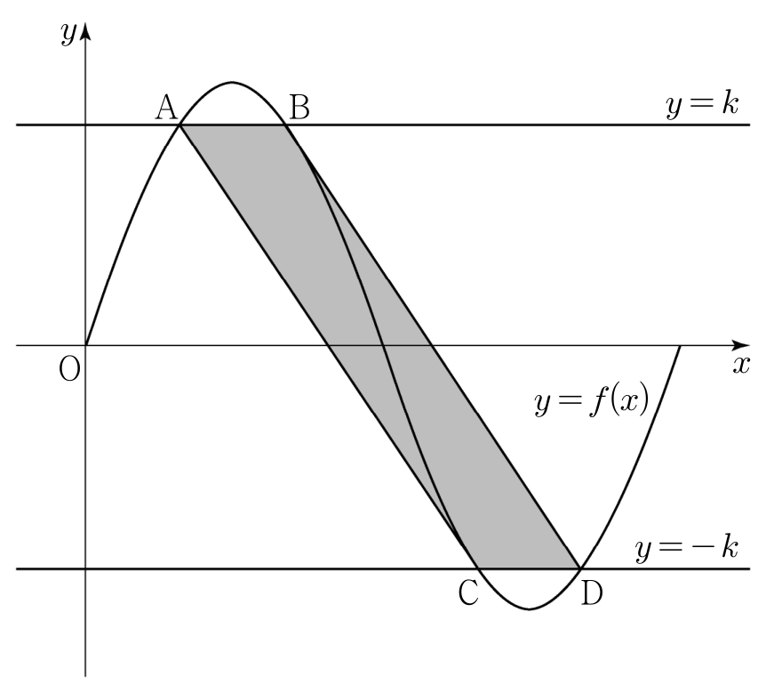
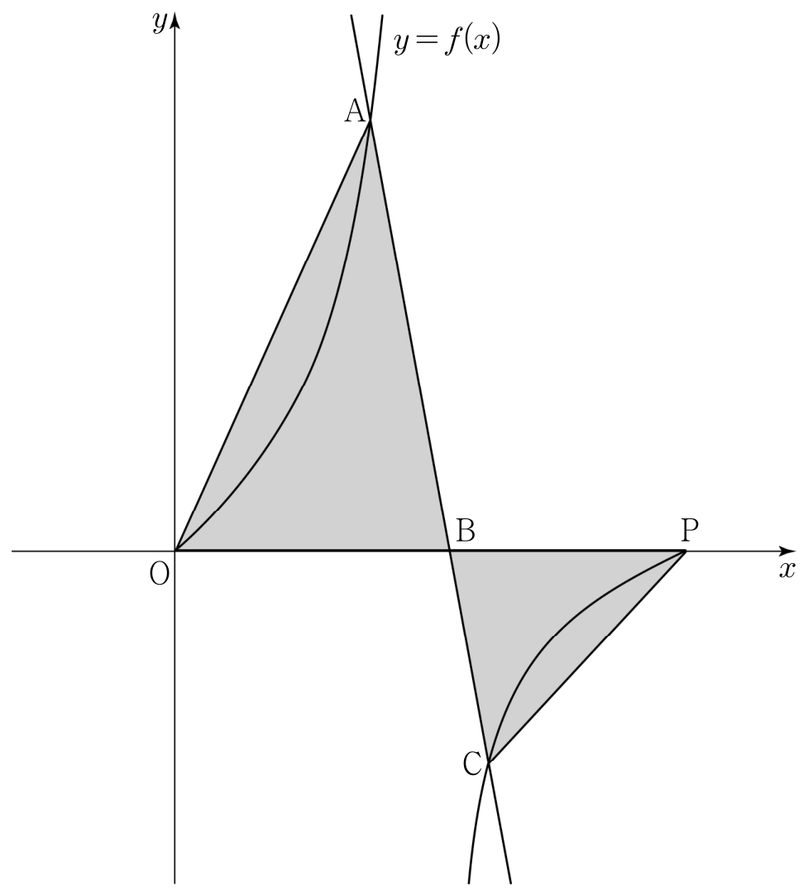
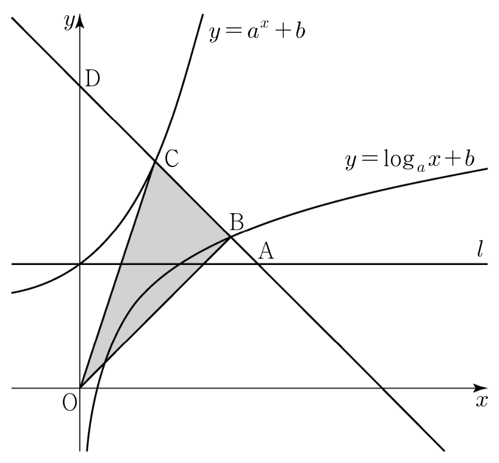

① \(\frac{2}{3}\pi\)② \(\frac{5}{6}\pi\)③ \(\pi\)④ \(\frac{7}{6}\pi\)⑤ \(\frac{4}{3}\pi\)
원본 정답 ⑤
원본 풀이 (내부용)[출제의도] 삼각함수가 포함된 방정식 이해하기
\(
\frac{\pi}{2}\le x\le\frac{3\pi}{2}
\)
에서 방정식 \(2\sin x+\sqrt3=0\)의 해는 곡선 \(y=\sin x\)와 직선 \(y=-\frac{\sqrt3}{2}\)이 만나는 점의 \(x\)좌표이다. 따라서 \(x=\frac43\pi\)이다.
생성기 숫자판 1/6 · G2M9-03#4$\frac{\pi}{2}\le x\le \pi$일 때, 방정식 $2\sin x-\sqrt{2}=0$을 만족시키는 $x$의 값으로 옳은 것을 고르세요.
① $\frac{\pi}{2}$② $\frac{2}{3}\pi$③ $\frac{3}{4}\pi$④ $\frac{5}{6}\pi$⑤ $\pi$
① \(1.3711\)② \(1.3874\)③ \(1.3892\)④ \(2.3874\)⑤ \(2.3892\)
원본 정답 ③
원본 풀이 (내부용)[출제의도] 상용로그의 성질 이해하기
표에서 \(\log 2.45=0.3892\)이므로
\(
\log 24.5=\log(2.45\times10)=\log2.45+1
=0.3892+1=1.3892
\)
이다.
*표:* 열은 \(3,4,5\), 행은 \(2.2,2.3,2.4\)로 표시되어 있고, \(2.4\)행과 \(5\)열의 값 \(0.3892\)가 동그라미로 표시되어 있다.
생성기 숫자판 1/6 · G2M8-02#0다음은 상용로그표의 일부입니다. 이 표를 이용하여 구한 $\log 5720$의 값으로 옳은 것을 고르세요.
① $3.7559$② $3.7566$③ $3.7574$④ $3.7649$⑤ $4.7497$
원본 (내부용)\(0\le x<2\pi\)일 때, 부등식 \(2\cos x-\sqrt{2}\le0\)을 만족시키는 모든 \(x\)의 값의 범위는 \(\alpha\le x\le\beta\)이다. \(\beta-\alpha\)의 값은? [3점]
① \(\pi\)② \(\frac{7}{6}\pi\)③ \(\frac{4}{3}\pi\)④ \(\frac{3}{2}\pi\)⑤ \(\frac{5}{3}\pi\)
원본 정답 ④
원본 풀이 (내부용)[출제의도] 삼각함수가 포함된 부등식 이해하기
부등식 \(2\cos x-\sqrt2\le0\)에서 \(\cos x\le\frac{\sqrt2}{2}\)이고, \(0\le x<2\pi\)에서 \(y=\cos x\)와 \(y=\frac{\sqrt2}{2}\)가 만나는 두 점의 \(x\)좌표는 각각 \(\frac\pi4,\frac{7\pi}4\)이다. 따라서 해는
\(
\frac{\pi}{4}\le x\le\frac{7\pi}{4}
\)
이다. \(\alpha=\frac\pi4,\ \beta=\frac{7\pi}4\)이므로
\(
\beta-\alpha=\frac{7\pi}{4}-\frac{\pi}{4}=\frac32\pi
\)
이다.
생성기 숫자판 1/6 · G2M9-16#5$0\le x<2\pi$일 때, 부등식 $5\cos x+\frac{5}{2}\le 0$을 만족시키는 모든 $x$의 값의 범위는 $\alpha\le x\le\beta$입니다. $\beta-\alpha$의 값으로 옳은 것을 고르세요.
① $\frac{2}{3}\pi$② $\frac{5}{6}\pi$③ $\pi$④ $\frac{7}{6}\pi$⑤ $\frac{4}{3}\pi$
원본 (내부용)곡선 \(y=2^x\) 위의 점 \((a,b)\)와 곡선 \(y=2^{x-3}\)의 점근선 사이의 거리가 \(7\)일 때, \(a+b\)의 값은? [3점]
① \(6\)② \(7\)③ \(8\)④ \(9\)⑤ \(10\)
원본 정답 ①
원본 풀이 (내부용)[출제의도] 지수함수의 그래프 이해하기
곡선 \(y=2^x-3\)의 점근선은 \(y=-3\)이므로 점 \((a,b)\)와 점근선 사이의 거리는 \(b+3\)이다. \(b+3=7\)이므로 \(b=4\)이다. 점 \((a,a)\)가 곡선 \(y=2^x\) 위에 있으므로 \(2^a=4\), \(a=2\)이다. 따라서 \(a+b=2+4=6\)이다.
생성기 숫자판 1/6 · G2M9-16#6곡선 $y=2^{x}$ 위의 점 $\left(a,\ b\right)$와 곡선 $y=2^{x}-5$의 점근선 사이의 거리가 $7$일 때, $a+b$의 값으로 옳은 것을 고르세요.
① $1$② $2$③ $3$④ $4$⑤ $5$
정답③ $3$ 곡선 $y=2^{x}-5$의 점근선은 직선 $y=-5$ 점 $\left(a,\ b\right)$와 직선 $y=-5$ 사이의 거리는 $b+5$이므로 $b+5=7$, $b=2$ 점 $\left(a,\ 2\right)$가 곡선 $y=2^{x}$ 위에 있으므로 $2^{a}=2$, $a=1$ 따라서 $a+b=3$
숫자: 원본 2 2 3 7 → 쌍둥이 2 2 5 7 · 같은 수: 2 7
생성기 숫자판 2/6 · G2M9-16#6곡선 $y=2^{x}$ 위의 점 $\left(a,\ b\right)$와 곡선 $y=2^{x}-5$의 점근선 사이의 거리가 $9$일 때, $a+b$의 값으로 옳은 것을 고르세요.
① $2$② $3$③ $4$④ $5$⑤ $6$
정답⑤ $6$ 곡선 $y=2^{x}-5$의 점근선은 직선 $y=-5$ 점 $\left(a,\ b\right)$와 직선 $y=-5$ 사이의 거리는 $b+5$이므로 $b+5=9$, $b=4$ 점 $\left(a,\ 4\right)$가 곡선 $y=2^{x}$ 위에 있으므로 $2^{a}=4$, $a=2$ 따라서 $a+b=6$
숫자: 원본 2 2 3 7 → 쌍둥이 2 2 5 9 · 같은 수: 2
생성기 숫자판 3/6 · G2M9-16#6곡선 $y=3^{x}$ 위의 점 $\left(a,\ b\right)$와 곡선 $y=3^{x}-5$의 점근선 사이의 거리가 $8$일 때, $a+b$의 값으로 옳은 것을 고르세요.
① $2$② $3$③ $4$④ $5$⑤ $6$
정답③ $4$ 곡선 $y=3^{x}-5$의 점근선은 직선 $y=-5$ 점 $\left(a,\ b\right)$와 직선 $y=-5$ 사이의 거리는 $b+5$이므로 $b+5=8$, $b=3$ 점 $\left(a,\ 3\right)$가 곡선 $y=3^{x}$ 위에 있으므로 $3^{a}=3$, $a=1$ 따라서 $a+b=4$
숫자: 원본 2 2 3 7 → 쌍둥이 3 3 5 8 · 같은 수: 3
생성기 숫자판 4/6 · G2M9-16#6곡선 $y=2^{x}$ 위의 점 $\left(a,\ b\right)$와 곡선 $y=2^{x}-2$의 점근선 사이의 거리가 $10$일 때, $a+b$의 값으로 옳은 것을 고르세요.
① $10$② $11$③ $12$④ $13$⑤ $14$
정답② $11$ 곡선 $y=2^{x}-2$의 점근선은 직선 $y=-2$ 점 $\left(a,\ b\right)$와 직선 $y=-2$ 사이의 거리는 $b+2$이므로 $b+2=10$, $b=8$ 점 $\left(a,\ 8\right)$가 곡선 $y=2^{x}$ 위에 있으므로 $2^{a}=8$, $a=3$ 따라서 $a+b=11$
숫자: 원본 2 2 3 7 → 쌍둥이 2 2 2 10 · 같은 수: 2
생성기 숫자판 5/6 · G2M9-16#6곡선 $y=3^{x}$ 위의 점 $\left(a,\ b\right)$와 곡선 $y=3^{x}-2$의 점근선 사이의 거리가 $5$일 때, $a+b$의 값으로 옳은 것을 고르세요.
① $4$② $5$③ $6$④ $7$⑤ $8$
정답① $4$ 곡선 $y=3^{x}-2$의 점근선은 직선 $y=-2$ 점 $\left(a,\ b\right)$와 직선 $y=-2$ 사이의 거리는 $b+2$이므로 $b+2=5$, $b=3$ 점 $\left(a,\ 3\right)$가 곡선 $y=3^{x}$ 위에 있으므로 $3^{a}=3$, $a=1$ 따라서 $a+b=4$
숫자: 원본 2 2 3 7 → 쌍둥이 3 3 2 5 · 같은 수: 2 3
생성기 숫자판 6/6 · G2M9-16#6곡선 $y=3^{x}$ 위의 점 $\left(a,\ b\right)$와 곡선 $y=3^{x}-4$의 점근선 사이의 거리가 $7$일 때, $a+b$의 값으로 옳은 것을 고르세요.
① $3$② $4$③ $5$④ $6$⑤ $7$
정답② $4$ 곡선 $y=3^{x}-4$의 점근선은 직선 $y=-4$ 점 $\left(a,\ b\right)$와 직선 $y=-4$ 사이의 거리는 $b+4$이므로 $b+4=7$, $b=3$ 점 $\left(a,\ 3\right)$가 곡선 $y=3^{x}$ 위에 있으므로 $3^{a}=3$, $a=1$ 따라서 $a+b=4$
숫자: 원본 2 2 3 7 → 쌍둥이 3 3 4 7 · 같은 수: 3 7
10. 2026년 6월 10번 · 3점 · 수학Ⅰ 지수·로그 · G2M9-16#7
원본 (내부용)함수 \(y=\log_5 x+2\)의 역함수의 그래프가 점 \((4,5^k)\)을 지날 때, \(k\)의 값은? [3점]
① \(1\)② \(2\)③ \(3\)④ \(4\)⑤ \(5\)
원본 정답 ②
원본 풀이 (내부용)[출제의도] 로그함수의 역함수 이해하기
함수 \(y=\log_5x+2\)의 역함수 그래프가 점 \((4,5^k)\)를 지나므로 원래 함수 그래프는 점 \((5^k,4)\)를 지난다.
\(
\log_5 5^k+2=4
\)
이므로 \(k+2=4\), \(k=2\)이다.
생성기 숫자판 1/6 · G2M9-16#7함수 $y=\log_{2}x-1$의 역함수의 그래프가 점 $\left(7,\ 2^{k}\right)$을 지날 때, $k$의 값으로 옳은 것을 고르세요.
① $8$② $9$③ $10$④ $11$⑤ $12$
정답① $8$ 역함수의 그래프가 점 $\left(7,\ 2^{k}\right)$을 지나므로 함수 $y=\log_{2}x-1$의 그래프는 점 $\left(2^{k},\ 7\right)$을 지납니다. $7=\log_{2}2^{k}-1=k-1$ 따라서 $k=8$
숫자: 원본 5 2 4 5 → 쌍둥이 2 1 7 2 · 같은 수: 2
생성기 숫자판 2/6 · G2M9-16#7함수 $y=\log_{2}x-2$의 역함수의 그래프가 점 $\left(3,\ 2^{k}\right)$을 지날 때, $k$의 값으로 옳은 것을 고르세요.
① $5$② $6$③ $7$④ $8$⑤ $9$
정답① $5$ 역함수의 그래프가 점 $\left(3,\ 2^{k}\right)$을 지나므로 함수 $y=\log_{2}x-2$의 그래프는 점 $\left(2^{k},\ 3\right)$을 지납니다. $3=\log_{2}2^{k}-2=k-2$ 따라서 $k=5$
숫자: 원본 5 2 4 5 → 쌍둥이 2 2 3 2 · 같은 수: 2
생성기 숫자판 3/6 · G2M9-16#7함수 $y=\log_{2}x+4$의 역함수의 그래프가 점 $\left(5,\ 2^{k}\right)$을 지날 때, $k$의 값으로 옳은 것을 고르세요.
① $1$② $2$③ $3$④ $4$⑤ $5$
정답① $1$ 역함수의 그래프가 점 $\left(5,\ 2^{k}\right)$을 지나므로 함수 $y=\log_{2}x+4$의 그래프는 점 $\left(2^{k},\ 5\right)$을 지납니다. $5=\log_{2}2^{k}+4=k+4$ 따라서 $k=1$
숫자: 원본 5 2 4 5 → 쌍둥이 2 4 5 2 · 같은 수: 2 4 5
생성기 숫자판 4/6 · G2M9-16#7함수 $y=\log_{2}x+3$의 역함수의 그래프가 점 $\left(4,\ 2^{k}\right)$을 지날 때, $k$의 값으로 옳은 것을 고르세요.
① $1$② $2$③ $3$④ $4$⑤ $5$
정답① $1$ 역함수의 그래프가 점 $\left(4,\ 2^{k}\right)$을 지나므로 함수 $y=\log_{2}x+3$의 그래프는 점 $\left(2^{k},\ 4\right)$을 지납니다. $4=\log_{2}2^{k}+3=k+3$ 따라서 $k=1$
숫자: 원본 5 2 4 5 → 쌍둥이 2 3 4 2 · 같은 수: 2 4
생성기 숫자판 5/6 · G2M9-16#7함수 $y=\log_{5}x+1$의 역함수의 그래프가 점 $\left(3,\ 5^{k}\right)$을 지날 때, $k$의 값으로 옳은 것을 고르세요.
① $1$② $2$③ $3$④ $4$⑤ $5$
정답② $2$ 역함수의 그래프가 점 $\left(3,\ 5^{k}\right)$을 지나므로 함수 $y=\log_{5}x+1$의 그래프는 점 $\left(5^{k},\ 3\right)$을 지납니다. $3=\log_{5}5^{k}+1=k+1$ 따라서 $k=2$
숫자: 원본 5 2 4 5 → 쌍둥이 5 1 3 5 · 같은 수: 5
생성기 숫자판 6/6 · G2M9-16#7함수 $y=\log_{3}x-3$의 역함수의 그래프가 점 $\left(4,\ 3^{k}\right)$을 지날 때, $k$의 값으로 옳은 것을 고르세요.
① $4$② $5$③ $6$④ $7$⑤ $8$
정답④ $7$ 역함수의 그래프가 점 $\left(4,\ 3^{k}\right)$을 지나므로 함수 $y=\log_{3}x-3$의 그래프는 점 $\left(3^{k},\ 4\right)$을 지납니다. $4=\log_{3}3^{k}-3=k-3$ 따라서 $k=7$
숫자: 원본 5 2 4 5 → 쌍둥이 3 3 4 3 · 같은 수: 4
11. 2026년 6월 11번 · 3점 · 수학Ⅰ 지수·로그 · G2M9-16#8
원본 (내부용)직선 \(x=k\ (k>1)\)이 두 곡선 \(y=2\log_2 x,\ y=\log_{\frac12}x\)와 만나는 점을 각각 \(A,\ B\)라 하자. \(3\le\overline{AB}\le6\)이 되도록 하는 모든 자연수 \(k\)의 값의 합은? [3점]
① \(9\)② \(10\)③ \(11\)④ \(12\)⑤ \(13\)
원본 정답 ①
원본 풀이 (내부용)[출제의도] 로그함수의 그래프를 이용하여 자연수의 합 구하는 문제 해결하기
곡선 \(y=2\log_2x\)와 \(x=k\)가 만나는 점 \(A\)의 좌표는 \((k,2\log_2k)\)이고, 곡선 \(y=\log_{\frac12}x\)와 \(x=k\)가 만나는 점 \(B\)의 좌표는 \((k,-\log_2k)\)이다.
\(
3\le\overline{AB}\le6
\)
\(
3\le2\log_2k-(-\log_2k)\le6
\)
\(
3\le3\log_2k\le6,\qquad 1\le\log_2k\le2
\)
\(
2\le k\le4
\)
따라서 모든 자연수 \(k\)의 합은 \(2+3+4=9\)이다.
생성기 숫자판 1/6 · G2M9-16#8직선 $x=k\ \left(k>1\right)$가 두 곡선 $y=10\log_{2}x$, $y=\log_{\frac{1}{2}}x$와 만나는 점을 각각 $\mathrm{A}$, $\mathrm{B}$라 합시다. $22\le\overline{\mathrm{AB}}\le 33$이 되도록 하는 모든 자연수 $k$의 값의 합으로 옳은 것을 고르세요.
생성기 숫자판 2/6 · G2M9-16#8직선 $x=k\ \left(k>1\right)$가 두 곡선 $y=12\log_{2}x$, $y=\log_{\frac{1}{2}}x$와 만나는 점을 각각 $\mathrm{A}$, $\mathrm{B}$라 합시다. $26\le\overline{\mathrm{AB}}\le 39$가 되도록 하는 모든 자연수 $k$의 값의 합으로 옳은 것을 고르세요.
생성기 숫자판 3/6 · G2M9-16#8직선 $x=k\ \left(k>1\right)$가 두 곡선 $y=5\log_{2}x$, $y=\log_{\frac{1}{2}}x$와 만나는 점을 각각 $\mathrm{A}$, $\mathrm{B}$라 합시다. $12\le\overline{\mathrm{AB}}\le 18$이 되도록 하는 모든 자연수 $k$의 값의 합으로 옳은 것을 고르세요.
생성기 숫자판 4/6 · G2M9-16#8직선 $x=k\ \left(k>1\right)$가 두 곡선 $y=7\log_{2}x$, $y=\log_{\frac{1}{2}}x$와 만나는 점을 각각 $\mathrm{A}$, $\mathrm{B}$라 합시다. $8\le\overline{\mathrm{AB}}\le 16$이 되도록 하는 모든 자연수 $k$의 값의 합으로 옳은 것을 고르세요.
생성기 숫자판 5/6 · G2M9-16#8직선 $x=k\ \left(k>1\right)$가 두 곡선 $y=16\log_{2}x$, $y=\log_{\frac{1}{2}}x$와 만나는 점을 각각 $\mathrm{A}$, $\mathrm{B}$라 합시다. $34\le\overline{\mathrm{AB}}\le 51$이 되도록 하는 모든 자연수 $k$의 값의 합으로 옳은 것을 고르세요.
생성기 숫자판 6/6 · G2M9-16#8직선 $x=k\ \left(k>1\right)$가 두 곡선 $y=13\log_{2}x$, $y=\log_{\frac{1}{2}}x$와 만나는 점을 각각 $\mathrm{A}$, $\mathrm{B}$라 합시다. $14\le\overline{\mathrm{AB}}\le 28$이 되도록 하는 모든 자연수 $k$의 값의 합으로 옳은 것을 고르세요.
원본 (내부용)다음 조건을 만족시키는 삼각형 \(ABC\)의 외접원의 넓이는? [3점] (가) \(\overline{BC}=3\) (나) \(\cos(B+C)=\cos A+\frac12\)
① \(\frac{12}{5}\pi\)② \(\frac{5}{2}\pi\)③ \(\frac{13}{5}\pi\)④ \(\frac{27}{10}\pi\)⑤ \(\frac{14}{5}\pi\)
원본 정답 ①
원본 풀이 (내부용)[출제의도] 사인법칙 이해하기
\(
\cos(B+C)=\cos(\pi-A)=-\cos A
\)
조건 (나)에서 \(\cos(B+C)=\cos A+\frac12\)이므로 \(-\cos A=\cos A+\frac12\), \(\cos A=-\frac14\)이다. \(0<A<\pi\)이므로 \(\sin A=\frac{\sqrt{15}}4\)이다. 삼각형 \(ABC\)의 외접원의 반지름을 \(R\)이라 하면 조건 (가)에서 \(\overline{BC}=3\)이고, 사인법칙에 의해
\(
\frac{\overline{BC}}{\sin A}=2R,\qquad
3\times\frac4{\sqrt{15}}=2R,\qquad
R=\frac25\sqrt{15}
\)
이다. 따라서 외접원의 넓이는
\(
\pi\times\left(\frac25\sqrt{15}\right)^2=\frac{12}{5}\pi
\)
이다.
생성기 숫자판 1/5 · G2M9-17#1다음 조건을 만족시키는 삼각형 $\mathrm{ABC}$의 외접원의 넓이로 옳은 것을 고르세요.
(가) $\overline{\mathrm{BC}}=5$
(나) $\cos\left(B+C\right)=\cos A-\frac{1}{2}$
① $\frac{17}{3}\pi$② $6\pi$③ $\frac{19}{3}\pi$④ $\frac{20}{3}\pi$⑤ $7\pi$
정답④ $\frac{20}{3}\pi$ $B+C=\pi-A$이므로 $\cos\left(B+C\right)=-\cos A$ $-\cos A=\cos A-\frac{1}{2}$에서 $\cos A=\frac{1}{4}$, $\sin A=\frac{\sqrt{15}}{4}$ 외접원의 반지름의 길이를 $R$라 하면 $2R=\frac{5}{\sin A}=\frac{5}{\frac{\sqrt{15}}{4}}$, $R^{2}=\frac{20}{3}$ 따라서 외접원의 넓이는 $\frac{20}{3}\pi$
숫자: 원본 3 12 → 쌍둥이 5 1 2
생성기 숫자판 2/5 · G2M9-17#1다음 조건을 만족시키는 삼각형 $\mathrm{ABC}$의 외접원의 넓이로 옳은 것을 고르세요.
(가) $\overline{\mathrm{BC}}=5$
(나) $\cos\left(B+C\right)=\cos A+\frac{6}{5}$
① $\frac{625}{64}\pi$② $\frac{313}{32}\pi$③ $\frac{627}{64}\pi$④ $\frac{157}{16}\pi$⑤ $\frac{629}{64}\pi$
정답① $\frac{625}{64}\pi$ $B+C=\pi-A$이므로 $\cos\left(B+C\right)=-\cos A$ $-\cos A=\cos A+\frac{6}{5}$에서 $\cos A=-\frac{3}{5}$, $\sin A=\frac{4}{5}$ 외접원의 반지름의 길이를 $R$라 하면 $2R=\frac{5}{\sin A}=\frac{5}{\frac{4}{5}}$, $R^{2}=\frac{625}{64}$ 따라서 외접원의 넓이는 $\frac{625}{64}\pi$
숫자: 원본 3 12 → 쌍둥이 5 6 5
생성기 숫자판 3/5 · G2M9-17#1다음 조건을 만족시키는 삼각형 $\mathrm{ABC}$의 외접원의 넓이로 옳은 것을 고르세요.
(가) $\overline{\mathrm{BC}}=6$
(나) $\cos\left(B+C\right)=\cos A-\frac{1}{2}$
① $\frac{48}{5}\pi$② $\frac{97}{10}\pi$③ $\frac{49}{5}\pi$④ $\frac{99}{10}\pi$⑤ $10\pi$
정답① $\frac{48}{5}\pi$ $B+C=\pi-A$이므로 $\cos\left(B+C\right)=-\cos A$ $-\cos A=\cos A-\frac{1}{2}$에서 $\cos A=\frac{1}{4}$, $\sin A=\frac{\sqrt{15}}{4}$ 외접원의 반지름의 길이를 $R$라 하면 $2R=\frac{6}{\sin A}=\frac{6}{\frac{\sqrt{15}}{4}}$, $R^{2}=\frac{48}{5}$ 따라서 외접원의 넓이는 $\frac{48}{5}\pi$
숫자: 원본 3 12 → 쌍둥이 6 1 2
생성기 숫자판 4/5 · G2M9-17#1다음 조건을 만족시키는 삼각형 $\mathrm{ABC}$의 외접원의 넓이로 옳은 것을 고르세요.
(가) $\overline{\mathrm{BC}}=6$
(나) $\cos\left(B+C\right)=\cos A-\frac{6}{5}$
① $\frac{221}{16}\pi$② $\frac{111}{8}\pi$③ $\frac{223}{16}\pi$④ $14\pi$⑤ $\frac{225}{16}\pi$
정답⑤ $\frac{225}{16}\pi$ $B+C=\pi-A$이므로 $\cos\left(B+C\right)=-\cos A$ $-\cos A=\cos A-\frac{6}{5}$에서 $\cos A=\frac{3}{5}$, $\sin A=\frac{4}{5}$ 외접원의 반지름의 길이를 $R$라 하면 $2R=\frac{6}{\sin A}=\frac{6}{\frac{4}{5}}$, $R^{2}=\frac{225}{16}$ 따라서 외접원의 넓이는 $\frac{225}{16}\pi$
숫자: 원본 3 12 → 쌍둥이 6 6 5
생성기 숫자판 5/5 · G2M9-17#1다음 조건을 만족시키는 삼각형 $\mathrm{ABC}$의 외접원의 넓이로 옳은 것을 고르세요.
(가) $\overline{\mathrm{BC}}=3$
(나) $\cos\left(B+C\right)=\cos A-1$
① $2\pi$② $3\pi$③ $4\pi$④ $5\pi$⑤ $6\pi$
정답② $3\pi$ $B+C=\pi-A$이므로 $\cos\left(B+C\right)=-\cos A$ $-\cos A=\cos A-1$에서 $\cos A=\frac{1}{2}$, $\sin A=\frac{\sqrt{3}}{2}$ 외접원의 반지름의 길이를 $R$라 하면 $2R=\frac{3}{\sin A}=\frac{3}{\frac{\sqrt{3}}{2}}$, $R^{2}=3$ 따라서 외접원의 넓이는 $3\pi$
숫자: 원본 3 12 → 쌍둥이 3 1 · 같은 수: 3
14. 2026년 6월 14번 · 4점 · 수학Ⅰ 지수·로그 · 4점 쌍둥이
원본 (내부용)두 정수 \(a,\ b\)에 대하여 \(\left(\frac{4^a\times6}{3^b}\right)^{\frac13}\)의 값이 \(10\) 이상 \(20\) 이하의 자연수일 때, \(a+b\)의 값은? [4점]
① \(-5\)② \(-4\)③ \(-3\)④ \(-2\)⑤ \(-1\)
원본 정답 ②
원본 풀이 (내부용)[출제의도] 지수법칙을 활용하여 식의 값 추론하기
\(
\left(\frac{4^a\times6^{\frac13}}{3^b}\right)^{\frac13}
=(2^{2a+1}\times3^{1-b})^{\frac13}
=2^{\frac{2a+1}{3}}\times3^{\frac{1-b}{3}}
\)
의 값이 \(10\) 이상 \(20\) 이하의 자연수이므로 가능한 값은 \(2^2\times3\), \(2^4\), \(2\times3^2\)이다.
(i) \(2^{\frac{2a+1}{3}}\times3^{\frac{1-b}{3}}=2^2\times3\)이면
\(
\frac{2a+1}{3}=2,\quad\frac{1-b}{3}=1
\)
이므로 \(a=\frac52,\ b=-2\)이다. \(a\)는 정수가 아니므로 조건을 만족시키지 않는다.
(ii) \(2^{\frac{2a+1}{3}}\times3^{\frac{1-b}{3}}=2^4\)이면
\(
\frac{2a+1}{3}=4,\quad\frac{1-b}{3}=0
\)
이므로 \(a=\frac{11}{2},\ b=1\)이다. \(a\)는 정수가 아니므로 조건을 만족시키지 않는다.
(iii) \(2^{\frac{2a+1}{3}}\times3^{\frac{1-b}{3}}=2\times3^2\)이면
\(
\frac{2a+1}{3}=1,\quad\frac{1-b}{3}=2
\)
이므로 \(a=1,\ b=-5\)이다. 따라서
\(
a+b=1+(-5)=-4
\)
이다.
쌍둥이 1/5 · 4점 쌍둥이두 정수 $a,b$에 대하여 $\left(\frac{4^a\times2}{9^b}\right)^{1/3}$의 값이 $280$ 이상 $300$ 이하의 자연수일 때, $a+b$를 구하시오.
① $2$② $3$③ $4$④ $5$⑤ $6$
정답③ $4$ 세제곱근을 $N$이라 하면 $N^3=2^{2a+1}3^{-2b}$. 따라서 $N=2^x3^y$ 꼴이고 $a=(3x-1)/2$, $b=-3y/2$가 정수여야 한다. 주어진 구간의 $2^x3^y$ 꼴 자연수 중 $x$는 홀수, $y$는 짝수인 것은 $N=288$ 하나뿐이다. $N=288=2^53^2$이므로 $a=(15-1)/2=7$, $b=-3(2)/2=-3$. 따라서 $a+b=4$.
쌍둥이 5/5 · 4점 쌍둥이두 정수 $a,b$에 대하여 $\left(\frac{4^a\times2}{9^b}\right)^{1/3}$의 값이 $30$ 이상 $40$ 이하의 자연수일 때, $a+b$를 구하시오.
① $5$② $6$③ $7$④ $8$⑤ $9$
정답③ $7$ 세제곱근을 $N$이라 하면 $N^3=2^{2a+1}3^{-2b}$. 따라서 $N=2^x3^y$ 꼴이고 $a=(3x-1)/2$, $b=-3y/2$가 정수여야 한다. 주어진 구간의 $2^x3^y$ 꼴 자연수 중 $x$는 홀수, $y$는 짝수인 것은 $N=32$ 하나뿐이다. $N=32=2^53^0$이므로 $a=(15-1)/2=7$, $b=-3(0)/2=0$. 따라서 $a+b=7$.
원본 (내부용)양수 \(k\)에 대하여 \(x\)에 대한 이차방정식 \( x^2-(\log_2 k+10)x+5=0 \) 이 서로 다른 두 실근 \(\log_2\alpha,\ \log_2\beta\)를 가질 때, \( \log_\alpha 2+\log_\beta 2=3 \) 이 되도록 하는 \(k\)의 값은? [4점]
① \(16\)② \(16\sqrt2\)③ \(32\)④ \(32\sqrt2\)⑤ \(64\)
원본 정답 ③
원본 풀이 (내부용)[출제의도] 로그의 성질을 활용하여 이차방정식 문제 해결하기
이차방정식의 근과 계수의 관계에 의하여
\(
\log_2\alpha+\log_2\beta=\log_2k+10,\qquad
\log_2\alpha\times\log_2\beta=5
\)
이다.
\(
\begin{aligned}
\log_\alpha2+\log_\beta2
&=\frac1{\log_2\alpha}+\frac1{\log_2\beta}\\
&=\frac{\log_2\alpha+\log_2\beta}
{\log_2\alpha\times\log_2\beta}
=\frac{\log_2k+10}{5}
\end{aligned}
\)
주어진 조건에서 \(\frac{\log_2k+10}{5}=3\)이므로 \(\log_2k=5\), 따라서 \(k=2^5=32\)이다.
**원래 PDF 쪽수: 2**
### 해설
쌍둥이 1/5 · 4점 쌍둥이양수 $k$에 대하여 $x$에 대한 이차방정식 $x^{2}-(\log_{2}k+9)x+4=0$이 서로 다른 두 실근 $\log_{2}\alpha$, $\log_{2}\beta$를 가질 때, $\log_{\alpha}2+\log_{\beta}2=3$이 되도록 하는 $k$의 값으로 옳은 것을 고르세요.
① $4 \sqrt{2}$② $8$③ $8 \sqrt{2}$④ $16$⑤ $16 \sqrt{2}$
정답② $8$ 근과 계수의 관계에 의하여 $\log_{2}\alpha+\log_{2}\beta=\log_{2}k+9$, $\log_{2}\alpha\times\log_{2}\beta=4$ $\log_{\alpha}2+\log_{\beta}2=\frac{1}{\log_{2}\alpha}+\frac{1}{\log_{2}\beta}=\frac{\log_{2}\alpha+\log_{2}\beta}{\log_{2}\alpha\times\log_{2}\beta}=\frac{\log_{2}k+9}{4}=3$ $\log_{2}k=12-9=3$이므로 $k=2^{3}=8$ 이때 이차방정식은 $x^{2}-12x+4=0$이고 판별식이 $12^{2}-4\times4>0$이므로 서로 다른 두 실근을 가집니다.
쌍둥이 2/5 · 4점 쌍둥이양수 $k$에 대하여 $x$에 대한 이차방정식 $x^{2}-(\log_{2}k+10)x+6=0$이 서로 다른 두 실근 $\log_{2}\alpha$, $\log_{2}\beta$를 가질 때, $\log_{\alpha}2+\log_{\beta}2=2$가 되도록 하는 $k$의 값으로 옳은 것을 고르세요.
① $2$② $2 \sqrt{2}$③ $4$④ $4 \sqrt{2}$⑤ $8$
정답③ $4$ 근과 계수의 관계에 의하여 $\log_{2}\alpha+\log_{2}\beta=\log_{2}k+10$, $\log_{2}\alpha\times\log_{2}\beta=6$ $\log_{\alpha}2+\log_{\beta}2=\frac{1}{\log_{2}\alpha}+\frac{1}{\log_{2}\beta}=\frac{\log_{2}\alpha+\log_{2}\beta}{\log_{2}\alpha\times\log_{2}\beta}=\frac{\log_{2}k+10}{6}=2$ $\log_{2}k=12-10=2$이므로 $k=2^{2}=4$ 이때 이차방정식은 $x^{2}-12x+6=0$이고 판별식이 $12^{2}-4\times6>0$이므로 서로 다른 두 실근을 가집니다.
쌍둥이 3/5 · 4점 쌍둥이양수 $k$에 대하여 $x$에 대한 이차방정식 $x^{2}-(\log_{2}k+4)x+3=0$이 서로 다른 두 실근 $\log_{2}\alpha$, $\log_{2}\beta$를 가질 때, $\log_{\alpha}2+\log_{\beta}2=3$이 되도록 하는 $k$의 값으로 옳은 것을 고르세요.
① $8 \sqrt{2}$② $16$③ $16 \sqrt{2}$④ $32$⑤ $32 \sqrt{2}$
정답④ $32$ 근과 계수의 관계에 의하여 $\log_{2}\alpha+\log_{2}\beta=\log_{2}k+4$, $\log_{2}\alpha\times\log_{2}\beta=3$ $\log_{\alpha}2+\log_{\beta}2=\frac{1}{\log_{2}\alpha}+\frac{1}{\log_{2}\beta}=\frac{\log_{2}\alpha+\log_{2}\beta}{\log_{2}\alpha\times\log_{2}\beta}=\frac{\log_{2}k+4}{3}=3$ $\log_{2}k=9-4=5$이므로 $k=2^{5}=32$ 이때 이차방정식은 $x^{2}-9x+3=0$이고 판별식이 $9^{2}-4\times3>0$이므로 서로 다른 두 실근을 가집니다.
쌍둥이 4/5 · 4점 쌍둥이양수 $k$에 대하여 $x$에 대한 이차방정식 $x^2-(\log_2 k+1)x+2=0$이 서로 다른 두 실근 $\log_2\alpha$, $\log_2\beta$를 가질 때, $\log_\alpha2+\log_\beta2=3$이 되도록 하는 $k$의 값으로 옳은 것을 고르세요.
① $16$② $24$③ $32$④ $48$⑤ $64$
정답③ $32$ 근의 곱은 $2$, 합은 $\log_2k+1$입니다. 역로그의 합은 두 근의 합을 곱으로 나눈 값이므로 $(\log_2k+1)/2=3$입니다. 따라서 $\log_2k=5$, $k=32$입니다.
쌍둥이 5/5 · 4점 쌍둥이양수 $k$에 대하여 $x$에 대한 이차방정식 $x^2-(\log_3 k+2)x+3=0$이 서로 다른 두 실근 $\log_3\alpha$, $\log_3\beta$를 가질 때, $\log_\alpha3+\log_\beta3=4$가 되도록 하는 $k$의 값으로 옳은 것을 고르세요.
① $19683$② $39366$③ $59049$④ $78732$⑤ $98415$
정답③ $59049$ 근의 곱은 $3$, 합은 $\log_3k+2$입니다. 역로그의 합은 두 근의 합을 곱으로 나눈 값이므로 $(\log_3k+2)/3=4$입니다. 따라서 $\log_3k=10$, $k=3^{10}=59049$입니다.
원본 (내부용)그림과 같이 \(0\le x\le8\)에서 정의된 함수 \( f(x)=2\sqrt3\sin\frac{\pi x}{4} \) 가 있다. 곡선 \(y=f(x)\)가 직선 \(y=k\)와 만나는 두 점을 \(y\)축에서 가까운 순서대로 \(A,\ B\)라 하고, 곡선 \(y=f(x)\)가 직선 \(y=-k\)와 만나는 두 점을 \(y\)축에서 가까운 순서대로 \(C,\ D\)라 하자. 직선 \(AC\)의 기울기가 \(-\frac32\)일 때, 사각형 \(ACDB\)의 넓이는? (단, \(0<k<2\sqrt3\)) [4점]

① \(\frac{13}{2}\)② \(7\)③ \(\frac{15}{2}\)④ \(8\)⑤ \(\frac{17}{2}\)
원본 정답 ④
원본 풀이 (내부용)[출제의도] 삼각함수의 그래프를 이용하여 도형의 넓이 문제 해결하기
함수 \(y=2\sqrt3\sin\frac{\pi x}{4}\)의 주기는
\(
\frac{2\pi}{\frac\pi4}=8
\)
이다. 점 \(A\)의 \(x\)좌표를 \(t\;(0<t<2)\)라 하면, 세 점 \(B,C,D\)의 \(x\)좌표는 각각 \(4-t,4+t,8-t\)이고 \(\overline{AB}=\overline{CD}=4-2t\)이므로 사각형 \(ACDB\)는 평행사변형이다.
두 점 \(A,C\)의 좌표는 \(A(t,k),C(4+t,-k)\)이고, 직선 \(AC\)의 기울기는 \(-\frac32\)이므로
\(
\frac{-k-k}{(4+t)-t}=-\frac32,\qquad k=3
\)
이다. \(A(t,3)\)이므로
\(
f(t)=2\sqrt3\sin\frac{\pi t}{4}=3,\qquad
\sin\frac{\pi t}{4}=\frac{\sqrt3}{2}
\quad\left(0<\frac{\pi t}{4}<\frac\pi2\right)
\)
따라서 \(\frac{\pi t}{4}=\frac\pi3,\ t=\frac43\)이다. 사각형 \(ACDB\)의 넓이는
\(
\overline{AB}\times2k=(4-2t)\times6
=\left(4-2\times\frac43\right)\times6=8
\)
이다.
쌍둥이 1/5 · 4점 쌍둥이$0\le x\le16$에서 정의된 함수 $f(x)=2\sqrt{2}\sin\frac{\pi x}{8}$가 있습니다. 곡선 $y=f(x)$가 직선 $y=k$와 만나는 두 점을 $y$축에서 가까운 순서대로 $A$, $B$라 하고, 곡선 $y=f(x)$가 직선 $y=-k$와 만나는 두 점을 $y$축에서 가까운 순서대로 $C$, $D$라 합니다. 직선 $AC$의 기울기가 $-\frac{1}{2}$일 때, 사각형 $ACDB$의 넓이로 옳은 것을 고르세요. (단, $0<k<2\sqrt{2}$)
① $16$② $\frac{33}{2}$③ $17$④ $\frac{35}{2}$⑤ $18$
정답① $16$ 함수 $f(x)$의 주기는 $16$이고 그래프는 직선 $x=4$, $x=12$에 대하여 대칭이므로 점 $A$의 $x$좌표를 $t$라 하면 $B(8-t,\ k)$, $C(8+t,\ -k)$, $D(16-t,\ -k)$ 직선 $AC$의 기울기는 $\frac{-k-k}{(8+t)-t}=-\frac{2k}{8}=-\frac{1}{2}$이므로 $k=2$ $2\sqrt{2}\sin\frac{\pi t}{8}=2$에서 $\sin\frac{\pi t}{8}=\frac{\sqrt{2}}{2}$, $0<t<4$이므로 $\frac{\pi t}{8}=\frac{\pi}{4}$, $t=2$ $\overline{AB}=\overline{CD}=8-2t=4$이고 두 변이 평행하므로 사각형 $ACDB$는 평행사변형이고, 넓이는 $4\times4=16$
쌍둥이 2/5 · 4점 쌍둥이$0\le x\le12$에서 정의된 함수 $f(x)=6\sin\frac{\pi x}{6}$가 있습니다. 곡선 $y=f(x)$가 직선 $y=k$와 만나는 두 점을 $y$축에서 가까운 순서대로 $A$, $B$라 하고, 곡선 $y=f(x)$가 직선 $y=-k$와 만나는 두 점을 $y$축에서 가까운 순서대로 $C$, $D$라 합니다. 직선 $AC$의 기울기가 $-1$일 때, 사각형 $ACDB$의 넓이로 옳은 것을 고르세요. (단, $0<k<6$)
① $22$② $\frac{45}{2}$③ $23$④ $\frac{47}{2}$⑤ $24$
정답⑤ $24$ 함수 $f(x)$의 주기는 $12$이고 그래프는 직선 $x=3$, $x=9$에 대하여 대칭이므로 점 $A$의 $x$좌표를 $t$라 하면 $B(6-t,\ k)$, $C(6+t,\ -k)$, $D(12-t,\ -k)$ 직선 $AC$의 기울기는 $\frac{-k-k}{(6+t)-t}=-\frac{2k}{6}=-1$이므로 $k=3$ $6\sin\frac{\pi t}{6}=3$에서 $\sin\frac{\pi t}{6}=\frac{1}{2}$, $0<t<3$이므로 $\frac{\pi t}{6}=\frac{\pi}{6}$, $t=1$ $\overline{AB}=\overline{CD}=6-2t=4$이고 두 변이 평행하므로 사각형 $ACDB$는 평행사변형이고, 넓이는 $4\times6=24$
쌍둥이 3/5 · 4점 쌍둥이$0\le x\le6$에서 정의된 함수 $f(x)=6\sin\frac{\pi x}{3}$가 있습니다. 곡선 $y=f(x)$가 직선 $y=k$와 만나는 두 점을 $y$축에서 가까운 순서대로 $A$, $B$라 하고, 곡선 $y=f(x)$가 직선 $y=-k$와 만나는 두 점을 $y$축에서 가까운 순서대로 $C$, $D$라 합니다. 직선 $AC$의 기울기가 $-2$일 때, 사각형 $ACDB$의 넓이로 옳은 것을 고르세요. (단, $0<k<6$)
① $\frac{23}{2}$② $12$③ $\frac{25}{2}$④ $13$⑤ $\frac{27}{2}$
정답② $12$ 함수 $f(x)$의 주기는 $6$이고 그래프는 직선 $x=\frac{3}{2}$, $x=\frac{9}{2}$에 대하여 대칭이므로 점 $A$의 $x$좌표를 $t$라 하면 $B(3-t,\ k)$, $C(3+t,\ -k)$, $D(6-t,\ -k)$ 직선 $AC$의 기울기는 $\frac{-k-k}{(3+t)-t}=-\frac{2k}{3}=-2$이므로 $k=3$ $6\sin\frac{\pi t}{3}=3$에서 $\sin\frac{\pi t}{3}=\frac{1}{2}$, $0<t<\frac{3}{2}$이므로 $\frac{\pi t}{3}=\frac{\pi}{6}$, $t=\frac{1}{2}$ $\overline{AB}=\overline{CD}=3-2t=2$이고 두 변이 평행하므로 사각형 $ACDB$는 평행사변형이고, 넓이는 $2\times6=12$
쌍둥이 4/5 · 4점 쌍둥이$0\le x\le12$에서 $f(x)=3\sqrt2\sin(\pi x/6)$입니다. 그래프가 $y=k$와 만나는 점을 $y$축에서 가까운 순으로 $A,B$, $y=-k$와 만나는 점을 가까운 순으로 $C,D$라 합니다. 직선 $AC$의 기울기가 $-1$일 때 사각형 $ACDB$의 넓이를 구하세요.
① $14$② $16$③ $18$④ $20$⑤ $22$
정답③ $18$ 대칭성으로 점들의 x좌표를 $t,6-t,6+t,12-t$로 놓습니다. 직선 $AC$의 기울기는 $-2k/6=-1$이므로 $k=3$입니다. $3\sqrt2\sin(\pi t/6)=3$에서 $\sin(\pi t/6)=1/\sqrt2$이므로 $t=3/2$입니다. 평행사변형의 밑변은 $6-2t=3$, 높이는 $2k=6$이므로 넓이는 18입니다.
쌍둥이 5/5 · 4점 쌍둥이$0\le x\le12$에서 $f(x)=2\sqrt3\sin(\pi x/6)$입니다. 그래프가 $y=k$와 만나는 점을 가까운 순으로 $A,B$, $y=-k$와 만나는 점을 가까운 순으로 $C,D$라 합니다. 직선 $AC$의 기울기가 $-1$일 때 사각형 $ACDB$의 넓이를 구하세요.
① $8$② $10$③ $12$④ $14$⑤ $16$
정답③ $12$ 대칭성에 의해 점들의 x좌표는 $t,6-t,6+t,12-t$입니다. 기울기 조건으로 $-2k/6=-1$, 따라서 $k=3$입니다. $2\sqrt3\sin(\pi t/6)=3$에서 $\sin(\pi t/6)=\sqrt3/2$, 따라서 $t=2$입니다. 밑변은 $6-2t=2$, 높이는 6이므로 넓이는 12입니다.
원본 (내부용)좌표평면에서 원 \(x^2+y^2=4\) 위의 두 점 \(A,\ B\)에 대하여 두 동경 \(OA,\ OB\)가 나타내는 각의 크기를 각각 \(\alpha,\ \beta\)라 하면 \( 0<\alpha<\beta<\pi,\qquad \overline{AB}=2\sqrt2,\qquad \cos\alpha\times\sin\beta=\frac15 \) 이다. 두 점 \(A,\ B\)에서 \(x\)축에 내린 수선의 발을 각각 \(C,\ D\)라 할 때, 사각형 \(ABDC\)의 넓이는? (단, \(O\)는 원점이고, \(x\)축의 양의 방향을 시초선으로 한다.) [4점]
① \(\frac{16}{5}\)② \(\frac{33}{10}\)③ \(\frac{17}{5}\)④ \(\frac72\)⑤ \(\frac{18}{5}\)
원본 정답 ⑤
원본 풀이 (내부용)[출제의도] 삼각함수의 정의를 이용하여 도형의 넓이 문제 해결하기
\(\overline{AB}=2\sqrt2\)이고 원의 반지름이 \(2\)이므로 삼각형 \(OAB\)는 직각이등변삼각형이다. 따라서 \(\beta=\frac\pi2+\alpha\), \(\beta<\pi\)이므로 \(0<\alpha<\frac\pi2\)이다.
\(
\sin\beta=\sin\left(\frac\pi2+\alpha\right)=\cos\alpha
\)
이므로 \(\cos\alpha\times\sin\beta=\cos^2\alpha=\frac15\)이고, \(\cos\alpha=\frac{\sqrt5}{5}\)이다. 따라서
\(
\sin\alpha=\sqrt{1-\cos^2\alpha}=\frac{2\sqrt5}{5},\qquad
\cos\beta=\cos\left(\frac\pi2+\alpha\right)=-\sin\alpha=-\frac{2\sqrt5}{5}
\)
이다. \(A(x_1,y_1), B(x_2,y_2)\)라 하면
\(
x_1=2\cos\alpha=\frac{2\sqrt5}{5},\quad
y_1=2\sin\alpha=\frac{4\sqrt5}{5},
\)
\(
x_2=2\cos\beta=-\frac{4\sqrt5}{5},\quad
y_2=2\sin\beta=\frac{2\sqrt5}{5}.
\)
따라서
\(
A\left(\frac{2\sqrt5}{5},\frac{4\sqrt5}{5}\right),\
B\left(-\frac{4\sqrt5}{5},\frac{2\sqrt5}{5}\right),\
C\left(\frac{2\sqrt5}{5},0\right),\
D\left(-\frac{4\sqrt5}{5},0\right)
\)
이고, 사각형 \(ABDC\)의 넓이는
\(
\frac12\times(\overline{AC}+\overline{BD})\times\overline{CD}
=\frac12\times\frac{6\sqrt5}{5}\times\frac{6\sqrt5}{5}
=\frac{18}{5}
\)
이다.
쌍둥이 1/5 · 4점 쌍둥이좌표평면에서 원 $x^{2}+y^{2}=16$ 위의 두 점 $A$, $B$에 대하여 두 동경 $OA$, $OB$가 나타내는 각의 크기를 각각 $\alpha$, $\beta$라 하면 $0<\alpha<\beta<\pi$, $\overline{AB}=4\sqrt{2}$, $\cos\alpha\times\sin\beta=\frac{1}{17}$입니다. 두 점 $A$, $B$에서 $x$축에 내린 수선의 발을 각각 $C$, $D$라 할 때, 사각형 $ABDC$의 넓이로 옳은 것을 고르세요. (단, $O$는 원점이고, $x$축의 양의 방향을 시초선으로 합니다.)
① $\frac{197}{17}$② $\frac{198}{17}$③ $\frac{199}{17}$④ $\frac{200}{17}$⑤ $\frac{201}{17}$
쌍둥이 2/5 · 4점 쌍둥이좌표평면에서 원 $x^{2}+y^{2}=9$ 위의 두 점 $A$, $B$에 대하여 두 동경 $OA$, $OB$가 나타내는 각의 크기를 각각 $\alpha$, $\beta$라 하면 $0<\alpha<\beta<\pi$, $\overline{AB}=3\sqrt{2}$, $\cos\alpha\times\sin\beta=\frac{1}{10}$입니다. 두 점 $A$, $B$에서 $x$축에 내린 수선의 발을 각각 $C$, $D$라 할 때, 사각형 $ABDC$의 넓이로 옳은 것을 고르세요. (단, $O$는 원점이고, $x$축의 양의 방향을 시초선으로 합니다.)
① $\frac{34}{5}$② $7$③ $\frac{36}{5}$④ $\frac{37}{5}$⑤ $\frac{38}{5}$
쌍둥이 3/5 · 4점 쌍둥이좌표평면에서 원 $x^{2}+y^{2}=25$ 위의 두 점 $A$, $B$에 대하여 두 동경 $OA$, $OB$가 나타내는 각의 크기를 각각 $\alpha$, $\beta$라 하면 $0<\alpha<\beta<\pi$, $\overline{AB}=5\sqrt{2}$, $\cos\alpha\times\sin\beta=\frac{1}{26}$입니다. 두 점 $A$, $B$에서 $x$축에 내린 수선의 발을 각각 $C$, $D$라 할 때, 사각형 $ABDC$의 넓이로 옳은 것을 고르세요. (단, $O$는 원점이고, $x$축의 양의 방향을 시초선으로 합니다.)
① $17$② $\frac{222}{13}$③ $\frac{223}{13}$④ $\frac{224}{13}$⑤ $\frac{225}{13}$
쌍둥이 4/5 · 4점 쌍둥이반지름이 $5$인 원 위의 두 점 $A$, $B$에 대하여 두 동경의 각을 $\alpha,\beta$라 하고 $0<\alpha<\beta<\pi$라 합니다. $\overline{AB}=5\sqrt2$, $\cos\alpha\sin\beta=1/5$일 때, $A$, $B$에서 $x$축에 내린 수선의 발을 각각 $C$, $D$라 할 때 사각형 $ABDC$의 넓이를 구하세요.
① $20$② $43/2$③ $45/2$④ $25$⑤ $27$
정답③ $45/2$ 현의 길이가 $5\sqrt2$이므로 중심각은 $\pi/2$, 따라서 $\beta=\alpha+\pi/2$입니다. $\sin\beta=\cos\alpha$이므로 $\cos^2\alpha=1/5$, $\sin^2\alpha=4/5$입니다. 사다리꼴 넓이는 $25(\sin\alpha+\cos\alpha)^2/2=25(1+4/5)/2=45/2$입니다.
숫자: 원본 4 0 2 2 15 → 쌍둥이 5 0 5 2 1 5 · 같은 수: 0 2
쌍둥이 5/5 · 4점 쌍둥이반지름이 $4$인 원 위의 두 점 $A$, $B$에 대하여 두 동경의 각을 $\alpha,\beta$라 하고 $0<\alpha<\beta<\pi$라 합니다. $\overline{AB}=4\sqrt2$, $\cos\alpha\sin\beta=1/17$일 때, $A$, $B$에서 $x$축에 내린 수선의 발을 각각 $C$, $D$라 할 때 사각형 $ABDC$의 넓이를 구하세요.
① $184/17$② $192/17$③ $200/17$④ $208/17$⑤ $216/17$
정답③ $200/17$ 현의 길이가 $4\sqrt2$이므로 중심각은 $\pi/2$, 따라서 $\beta=\alpha+\pi/2$입니다. $\sin\beta=\cos\alpha$이므로 $\cos^2\alpha=1/17$, $\sin^2\alpha=16/17$입니다. 사다리꼴 넓이는 $16(\sin\alpha+\cos\alpha)^2/2=8(1+8/17)=200/17$입니다.
원본 (내부용)그림과 같이 두 원 \(C_1,\ C_2\)가 서로 다른 두 점 \(P,\ Q\)에서 만나고, 직선 \(l\)이 이 두 원과 동시에 접한다. 직선 \(l\)과 두 원 \(C_1,\ C_2\)의 접점을 각각 \(A,\ B\)라 할 때, \(\angle QAB=\theta_1,\ \angle QBA=\theta_2\)라 하자. \( \overline{AB}=2,\qquad \sin\theta_1:\sin\theta_2=\sqrt3:\sqrt2 \) 이고, 삼각형 \(PAB\)의 외접원의 반지름의 길이가 \(\frac{3\sqrt3}{5}\)일 때, 선분 \(QA\)의 길이를 구하는 과정이다. (단, \(\angle APB<\angle AQB\)) 원의 성질에 의하여 \( \angle APQ=\angle QAB,\qquad \angle BPQ=\angle QBA \) 이므로 \(\angle APB=\theta_1+\theta_2\)이다. \(\angle AQB=\pi-(\theta_1+\theta_2)\)이고 \(\angle APB<\angle AQB\)이므로 \( \theta_1+\theta_2<\frac{\pi}{2} \) 이다. \(\overline{AB}=2\)이고 삼각형 \(PAB\)의 외접원의 반지름의 길이가 \(\frac{3\sqrt3}{5}\)이므로 삼각형 \(PAB\)에서 사인법칙에 의하여 \( \sin(\theta_1+\theta_2)=\boxed{\text{(가)}} \) 이다. \(\sin\theta_1:\sin\theta_2=\sqrt3:\sqrt2\)이므로 삼각형 \(QAB\)에서 사인법칙에 의하여 \( \overline{QB}=\boxed{\text{(나)}}\times\overline{QA} \) 이다. \(\angle AQB=\pi-(\theta_1+\theta_2)\), \(\overline{AB}=2\)이므로 삼각형 \(QAB\)에서 코사인법칙에 의하여 \( \overline{QA}=\boxed{\text{(다)}} \) 이다. 위의 (가), (나), (다)에 알맞은 수를 각각 \(p,\ q,\ r\)이라 할 때, \(p\times q\times r^2\)의 값은? [4점]
① \(\frac{20\sqrt2}{19}\)② \(\frac{21\sqrt2}{19}\)③ \(\frac{22\sqrt2}{19}\)④ \(\frac{23\sqrt2}{19}\)⑤ \(\frac{24\sqrt2}{19}\)
원본 정답 ①
원본 풀이 (내부용)[출제의도] 사인법칙과 코사인법칙을 활용하여 선분의 길이 추론하기
원의 성질에 의하여 \(\angle APQ=\angle QAB,\ \angle BPQ=\angle QBA\)이므로 \(\angle APB=\theta_1+\theta_2\)이다. \(\angle AQB=\pi-(\theta_1+\theta_2)\)이고 \(\angle APB<\angle AQB\)이므로 \(\theta_1+\theta_2<\frac\pi2\)이다.
\(\overline{AB}=2\), 삼각형 \(PAB\)의 외접원 반지름이 \(\frac{3\sqrt3}{5}\)이므로 사인법칙에 의해
\(
\frac2{\sin(\theta_1+\theta_2)}=\frac{6\sqrt3}{5},\qquad
\sin(\theta_1+\theta_2)=\frac{5\sqrt3}{9}
\)
이다. \(\sin\theta_1:\sin\theta_2=\sqrt3:\sqrt2\)이므로 삼각형 \(QAB\)의 사인법칙에 의해
\(
\overline{QB}:\overline{QA}=\sqrt3:\sqrt2,\qquad
\overline{QB}=\frac{\sqrt6}{2}\overline{QA}
\)
이다. 또
\(
\begin{aligned}
\cos(\angle AQB)
&=\cos\bigl(\pi-(\theta_1+\theta_2)\bigr)\\
&=-\cos(\theta_1+\theta_2)
=-\sqrt{1-\sin^2(\theta_1+\theta_2)}
=-\frac{\sqrt6}{9}.
\end{aligned}
\)
코사인법칙에 의해
\(
\begin{aligned}
4
&=\overline{QA}^{\,2}+\overline{QB}^{\,2}
-2\overline{QA}\,\overline{QB}\cos(\angle AQB)\\
&=\overline{QA}^{\,2}+\frac32\overline{QA}^{\,2}
-2\overline{QA}\cdot\frac{\sqrt6}{2}\overline{QA}
\left(-\frac{\sqrt6}{9}\right),
\end{aligned}
\)
따라서 \(\overline{QA}^{\,2}=\frac{24}{19}\), \(\overline{QA}=\sqrt{\frac{24}{19}}\)이다. 그러므로
\(
p=\frac{5\sqrt3}{9},\quad q=\frac{\sqrt6}{2},\quad
r=\sqrt{\frac{24}{19}},
\)
\(
p\times q\times r^2
=\frac{5\sqrt3}{9}\times\frac{\sqrt6}{2}\times\frac{24}{19}
=\frac{20\sqrt2}{19}.
\)
쌍둥이 1/5 · 4점 쌍둥이두 원 $C_{1}$, $C_{2}$가 서로 다른 두 점 $P$, $Q$에서 만나고, 직선 $l$이 이 두 원과 동시에 접합니다. 직선 $l$과 두 원 $C_{1}$, $C_{2}$의 접점을 각각 $A$, $B$라 할 때, $\angle QAB=\theta_{1}$, $\angle QBA=\theta_{2}$라 합니다. $\overline{AB}=2$, $\sin\theta_{1}:\sin\theta_{2}=3:2$이고, 삼각형 $PAB$의 외접원의 반지름의 길이가 $\frac{5 \sqrt{6}}{12}$일 때, 다음은 선분 $QA$의 길이를 구하는 과정입니다. (단, $\angle APB<\angle AQB$) 원의 성질에 의하여 $\angle APQ=\angle QAB$, $\angle BPQ=\angle QBA$이므로 $\angle APB=\theta_{1}+\theta_{2}$입니다. $\angle AQB=\pi-(\theta_{1}+\theta_{2})$이고 $\angle APB<\angle AQB$이므로 $\theta_{1}+\theta_{2}<\frac{\pi}{2}$입니다. $\overline{AB}=2$이고 삼각형 $PAB$의 외접원의 반지름의 길이가 $\frac{5 \sqrt{6}}{12}$이므로 삼각형 $PAB$에서 사인법칙에 의하여 $\sin(\theta_{1}+\theta_{2})=\boxed{\text{(가)}}$입니다. $\sin\theta_{1}:\sin\theta_{2}=3:2$이므로 삼각형 $QAB$에서 사인법칙에 의하여 $\overline{QB}=\boxed{\text{(나)}}\times\overline{QA}$입니다. $\angle AQB=\pi-(\theta_{1}+\theta_{2})$, $\overline{AB}=2$이므로 삼각형 $QAB$에서 코사인법칙에 의하여 $\overline{QA}=\boxed{\text{(다)}}$입니다. 위의 (가), (나), (다)에 알맞은 수를 각각 $p$, $q$, $r$이라 할 때, $p\times q\times r^{2}$의 값으로 옳은 것을 고르세요.
쌍둥이 2/5 · 4점 쌍둥이두 원 $C_{1}$, $C_{2}$가 서로 다른 두 점 $P$, $Q$에서 만나고, 직선 $l$이 이 두 원과 동시에 접합니다. 직선 $l$과 두 원 $C_{1}$, $C_{2}$의 접점을 각각 $A$, $B$라 할 때, $\angle QAB=\theta_{1}$, $\angle QBA=\theta_{2}$라 합니다. $\overline{AB}=2$, $\sin\theta_{1}:\sin\theta_{2}=4:3$이고, 삼각형 $PAB$의 외접원의 반지름의 길이가 $\frac{3 \sqrt{2}}{4}$일 때, 다음은 선분 $QA$의 길이를 구하는 과정입니다. (단, $\angle APB<\angle AQB$) 원의 성질에 의하여 $\angle APQ=\angle QAB$, $\angle BPQ=\angle QBA$이므로 $\angle APB=\theta_{1}+\theta_{2}$입니다. $\angle AQB=\pi-(\theta_{1}+\theta_{2})$이고 $\angle APB<\angle AQB$이므로 $\theta_{1}+\theta_{2}<\frac{\pi}{2}$입니다. $\overline{AB}=2$이고 삼각형 $PAB$의 외접원의 반지름의 길이가 $\frac{3 \sqrt{2}}{4}$이므로 삼각형 $PAB$에서 사인법칙에 의하여 $\sin(\theta_{1}+\theta_{2})=\boxed{\text{(가)}}$입니다. $\sin\theta_{1}:\sin\theta_{2}=4:3$이므로 삼각형 $QAB$에서 사인법칙에 의하여 $\overline{QB}=\boxed{\text{(나)}}\times\overline{QA}$입니다. $\angle AQB=\pi-(\theta_{1}+\theta_{2})$, $\overline{AB}=2$이므로 삼각형 $QAB$에서 코사인법칙에 의하여 $\overline{QA}=\boxed{\text{(다)}}$입니다. 위의 (가), (나), (다)에 알맞은 수를 각각 $p$, $q$, $r$이라 할 때, $p\times q\times r^{2}$의 값으로 옳은 것을 고르세요.
쌍둥이 3/5 · 4점 쌍둥이두 원 $C_{1}$, $C_{2}$가 서로 다른 두 점 $P$, $Q$에서 만나고, 직선 $l$이 이 두 원과 동시에 접합니다. 직선 $l$과 두 원 $C_{1}$, $C_{2}$의 접점을 각각 $A$, $B$라 할 때, $\angle QAB=\theta_{1}$, $\angle QBA=\theta_{2}$라 합니다. $\overline{AB}=2$, $\sin\theta_{1}:\sin\theta_{2}=4:3$이고, 삼각형 $PAB$의 외접원의 반지름의 길이가 $\frac{4 \sqrt{15}}{15}$일 때, 다음은 선분 $QA$의 길이를 구하는 과정입니다. (단, $\angle APB<\angle AQB$) 원의 성질에 의하여 $\angle APQ=\angle QAB$, $\angle BPQ=\angle QBA$이므로 $\angle APB=\theta_{1}+\theta_{2}$입니다. $\angle AQB=\pi-(\theta_{1}+\theta_{2})$이고 $\angle APB<\angle AQB$이므로 $\theta_{1}+\theta_{2}<\frac{\pi}{2}$입니다. $\overline{AB}=2$이고 삼각형 $PAB$의 외접원의 반지름의 길이가 $\frac{4 \sqrt{15}}{15}$이므로 삼각형 $PAB$에서 사인법칙에 의하여 $\sin(\theta_{1}+\theta_{2})=\boxed{\text{(가)}}$입니다. $\sin\theta_{1}:\sin\theta_{2}=4:3$이므로 삼각형 $QAB$에서 사인법칙에 의하여 $\overline{QB}=\boxed{\text{(나)}}\times\overline{QA}$입니다. $\angle AQB=\pi-(\theta_{1}+\theta_{2})$, $\overline{AB}=2$이므로 삼각형 $QAB$에서 코사인법칙에 의하여 $\overline{QA}=\boxed{\text{(다)}}$입니다. 위의 (가), (나), (다)에 알맞은 수를 각각 $p$, $q$, $r$이라 할 때, $p\times q\times r^{2}$의 값으로 옳은 것을 고르세요.
쌍둥이 4/5 · 4점 쌍둥이두 원 $C_{1}$, $C_{2}$가 서로 다른 두 점 $P$, $Q$에서 만나고, 직선 $l$이 이 두 원과 동시에 접합니다. 직선 $l$과 두 원 $C_{1}$, $C_{2}$의 접점을 각각 $A$, $B$라 할 때, $\angle QAB=\theta_{1}$, $\angle QBA=\theta_{2}$라 합니다. $\overline{AB}=2$, $\sin\theta_{1}:\sin\theta_{2}=\sqrt{5}:2$이고, 삼각형 $PAB$의 외접원의 반지름의 길이가 $\frac{3 \sqrt{2}}{4}$일 때, 다음은 선분 $QA$의 길이를 구하는 과정입니다. (단, $\angle APB<\angle AQB$) 원의 성질에 의하여 $\angle APQ=\angle QAB$, $\angle BPQ=\angle QBA$이므로 $\angle APB=\theta_{1}+\theta_{2}$입니다. $\angle AQB=\pi-(\theta_{1}+\theta_{2})$이고 $\angle APB<\angle AQB$이므로 $\theta_{1}+\theta_{2}<\frac{\pi}{2}$입니다. $\overline{AB}=2$이고 삼각형 $PAB$의 외접원의 반지름의 길이가 $\frac{3 \sqrt{2}}{4}$이므로 삼각형 $PAB$에서 사인법칙에 의하여 $\sin(\theta_{1}+\theta_{2})=\boxed{\text{(가)}}$입니다. $\sin\theta_{1}:\sin\theta_{2}=\sqrt{5}:2$이므로 삼각형 $QAB$에서 사인법칙에 의하여 $\overline{QB}=\boxed{\text{(나)}}\times\overline{QA}$입니다. $\angle AQB=\pi-(\theta_{1}+\theta_{2})$, $\overline{AB}=2$이므로 삼각형 $QAB$에서 코사인법칙에 의하여 $\overline{QA}=\boxed{\text{(다)}}$입니다. 위의 (가), (나), (다)에 알맞은 수를 각각 $p$, $q$, $r$이라 할 때, $p\times q\times r^{2}$의 값으로 옳은 것을 고르세요.
쌍둥이 5/5 · 4점 쌍둥이두 원 $C_{1}$, $C_{2}$가 서로 다른 두 점 $P$, $Q$에서 만나고, 직선 $l$이 이 두 원과 동시에 접합니다. 직선 $l$과 두 원 $C_{1}$, $C_{2}$의 접점을 각각 $A$, $B$라 할 때, $\angle QAB=\theta_{1}$, $\angle QBA=\theta_{2}$라 합니다. $\overline{AB}=2$, $\sin\theta_{1}:\sin\theta_{2}=\sqrt{7}:2$이고, 삼각형 $PAB$의 외접원의 반지름의 길이가 $\frac{4 \sqrt{15}}{15}$일 때, 다음은 선분 $QA$의 길이를 구하는 과정입니다. (단, $\angle APB<\angle AQB$) 원의 성질에 의하여 $\angle APQ=\angle QAB$, $\angle BPQ=\angle QBA$이므로 $\angle APB=\theta_{1}+\theta_{2}$입니다. $\angle AQB=\pi-(\theta_{1}+\theta_{2})$이고 $\angle APB<\angle AQB$이므로 $\theta_{1}+\theta_{2}<\frac{\pi}{2}$입니다. $\overline{AB}=2$이고 삼각형 $PAB$의 외접원의 반지름의 길이가 $\frac{4 \sqrt{15}}{15}$이므로 삼각형 $PAB$에서 사인법칙에 의하여 $\sin(\theta_{1}+\theta_{2})=\boxed{\text{(가)}}$입니다. $\sin\theta_{1}:\sin\theta_{2}=\sqrt{7}:2$이므로 삼각형 $QAB$에서 사인법칙에 의하여 $\overline{QB}=\boxed{\text{(나)}}\times\overline{QA}$입니다. $\angle AQB=\pi-(\theta_{1}+\theta_{2})$, $\overline{AB}=2$이므로 삼각형 $QAB$에서 코사인법칙에 의하여 $\overline{QA}=\boxed{\text{(다)}}$입니다. 위의 (가), (나), (다)에 알맞은 수를 각각 $p$, $q$, $r$이라 할 때, $p\times q\times r^{2}$의 값으로 옳은 것을 고르세요.
원본 (내부용)\(n\ge2\)인 자연수 \(n\)에 대하여 \(n-\sqrt{401}\)의 \(n\)제곱근 중 실수인 것의 개수를 \(f(n)\)이라 할 때, \( \log_2\frac{15}{n\times(f(n)+3)} \) 의 값이 정수가 되도록 하는 \(50\) 이하의 모든 \(n\)의 값의 합은? [4점]
① \(108\)② \(111\)③ \(114\)④ \(117\)⑤ \(120\)
원본 정답 ④
원본 풀이 (내부용)[출제의도] 거듭제곱근의 정의를 이용하여 자연수의 합 추론하기
\(
20<\sqrt{401}<21
\)
이므로 \(2\le n\le20\)일 때 \(n-\sqrt{401}<0\), \(21\le n\le50\)일 때 \(n-\sqrt{401}>0\)이다. \(\log_2\frac{15}{n\times(f(n)+3)}=k\;(k\text{는 정수})\)라 하자.
(i) \(n\)이 홀수인 경우 \(n-\sqrt{401}<0\)일 때 \(n-\sqrt{401}\)의 \(n\)제곱근 중 실수인 것의 개수는 1이므로 \(f(n)=1\)이다.
\(
\log_2\frac{15}{n(f(n)+3)}
=\log_2\frac{15}{4n}=k
\)
에서 \(n=15\times2^{-k-2}\)이고, \(n\)이 홀수이므로 \(k=-2\)일 때 \(n=15\)이다.
(ii) \(n\)이 짝수이고 \(2\le n\le20\)인 경우 \(f(n)=0\)이다.
\(
\log_2\frac{15}{n(f(n)+3)}
=\log_2\frac5n=k
\)
이므로 \(n=5\times2^{-k}\)이고, \(2\le n\le20\)에서 \(k=-1\)이면 \(n=10\), \(k=-2\)이면 \(n=20\)이다.
(iii) \(n\)이 짝수이고 \(22\le n\le50\)인 경우 \(f(n)=2\)이다.
\(
\log_2\frac{15}{n(f(n)+3)}
=\log_2\frac3n=k
\)
이므로 \(n=3\times2^{-k}\)이고, \(22\le n\le50\)에서 \(k=-3\)이면 \(n=24\), \(k=-4\)이면 \(n=48\)이다.
따라서 모든 \(n\)의 값의 합은 \(15+10+20+24+48=117\)이다.
쌍둥이 1/5 · 4점 쌍둥이$n\ge2$인 자연수 $n$에 대하여 $n-\sqrt{730}$의 $n$제곱근 중 실수인 것의 개수를 $f(n)$이라 하자. $\log_7\frac{35}{n(f(n)+6)}$의 값이 정수가 되도록 하는 $40$ 이하의 모든 $n$의 값의 합을 구하시오.
① $31$② $37$③ $40$④ $43$⑤ $47$
정답③ $40$ $27<\sqrt{730}<28$이므로 홀수 $n$이면 $f(n)=1$, 짝수 $n\le27$이면 $f(n)=0$, 짝수 $n\ge28$이면 $f(n)=2$이다. 홀수에서 로그의 진수는 $5/n$이므로 범위에서 해당하는 수는 $n=5,35$이다. 짝수 $n\le27$에서는 $35/(6n)$, 짝수 $n\ge28$에서는 $35/(8n)$이며 어느 것도 $7$의 정수 거듭제곱이 되지 않는다. 따라서 구하는 합은 $5+35=40$이다.
숫자: 원본 2 401 2 15 3 50 → 쌍둥이 2 730 7 35 6 40 · 같은 수: 2
쌍둥이 2/5 · 4점 쌍둥이$n\ge2$인 자연수 $n$에 대하여 $n-\sqrt{730}$의 $n$제곱근 중 실수인 것의 개수를 $f(n)$이라 하자. $\log_7\frac{30}{n(f(n)+5)}$의 값이 정수가 되도록 하는 $30$ 이하의 모든 $n$의 값의 합을 구하시오.
① $41$② $46$③ $51$④ $56$⑤ $61$
정답① $41$ $27<\sqrt{730}<28$이므로 $n\le27$에서 $n-\sqrt{730}<0$이고, $n\ge28$에서는 양수이다. 따라서 홀수 $n$이면 $f(n)=1$, 짝수 $n\le27$이면 $f(n)=0$, 짝수 $n\ge28$이면 $f(n)=2$이다. 홀수에서는 로그의 진수가 $5/n$이고, 짝수 $n\le27$에서는 $6/n$, 짝수 $n\ge28$에서는 $30/(7n)$이다. $2\le n\le30$에서 이 값이 $7$의 정수 거듭제곱이 되는 수는 각각 $n=5$, $n=6$, $n=30$이다. 따라서 구하는 합은 $5+6+30=41$이다.
숫자: 원본 2 401 2 15 3 50 → 쌍둥이 2 730 7 30 5 30 · 같은 수: 2
쌍둥이 3/5 · 4점 쌍둥이$n\ge2$인 자연수 $n$에 대하여 $n-\sqrt{530}$의 $n$제곱근 중 실수인 것의 개수를 $f(n)$이라 할 때, $\log_{2}\frac{9}{n\times(f(n)+2)}$의 값이 정수가 되도록 하는 $60$ 이하의 모든 $n$의 값의 합으로 옳은 것을 고르세요.
① $57$② $60$③ $63$④ $66$⑤ $69$
정답① $57$ $23<\sqrt{530}<24$이므로 $n\le23$이면 $n-\sqrt{530}<0$, $n\ge24$이면 $n-\sqrt{530}>0$ $f(n)$은 $n$이 홀수이면 $1$, $n$이 짝수이면 $n\le23$일 때 $0$, $n\ge24$일 때 $2$입니다. $\frac{9}{n(f(n)+2)}$가 $2$의 거듭제곱이 되는 $n$을 찾으면 $n=3$일 때 $\frac{9}{3\times3}=1$, $n=18$일 때 $\frac{9}{18\times2}=\frac{1}{4}$, $n=36$일 때 $\frac{9}{36\times4}=\frac{1}{16}$ 따라서 구하는 합은 $3+18+36=57$
숫자: 원본 2 401 2 15 3 50 → 쌍둥이 2 530 2 9 2 60 · 같은 수: 2
쌍둥이 4/5 · 4점 쌍둥이$n\ge2$인 자연수에 대하여 $n-\sqrt{101}$의 $n$제곱근 중 실근 개수를 $f(n)$이라 합니다. $\log_2(3/[n(f(n)+2)])$가 정수가 되도록 하는 $20$ 이하의 모든 $n$의 합을 구하세요.
① $14$② $16$③ $18$④ $20$⑤ $22$
정답③ $18$ $\sqrt{101}$은 10과 11 사이입니다. 홀수 $n$이면 $f(n)=1$이고, 짝수 $n<\sqrt{101}$이면 $f(n)=0$, 짝수 $n>\sqrt{101}$이면 $f(n)=2$입니다. 직접 대입하여 2의 정수 거듭제곱 비율을 확인하면 $n=6$에서 $3/(6\cdot2)=1/4$, $n=12$에서 $3/(12\cdot4)=1/16$입니다. 나머지 $2\le n\le20$에서는 해당 비율이 2의 정수 거듭제곱이 아닙니다. 따라서 합은 $6+12=18$입니다.
쌍둥이 5/5 · 4점 쌍둥이$n\ge2$인 자연수에 대하여 $n-\sqrt{101}$의 $n$제곱근 중 실근 개수를 $f(n)$이라 합니다. $\log_2(5/[n(f(n)+1)])$이 정수가 되도록 하는 $20$ 이하의 모든 $n$의 합을 구하세요.
① $11$② $13$③ $15$④ $17$⑤ $19$
정답③ $15$ $\sqrt{101}$은 10과 11 사이입니다. 홀수 차수에서는 실근이 하나이며, 짝수 차수는 $n<\sqrt{101}$에서 실근이 없고 $n>\sqrt{101}$에서 두 실근을 가집니다. 범위의 정수들을 대입하면 $n=5$에서 $5/(5\cdot2)=1/2$, $n=10$에서 $5/(10\cdot1)=1/2$입니다. 다른 $n$에서는 비율이 2의 정수 거듭제곱이 아닙니다. 따라서 합은 $5+10=15$입니다.
숫자: 원본 2 401 2 15 3 50 → 쌍둥이 2 101 2 5 1 20 · 같은 수: 2
20. 2026년 6월 20번 · 4점 · 수학Ⅰ 삼각함수 · 4점 쌍둥이
원본 (내부용)그림과 같이 집합 \( \{x\mid 0\le x\le4\pi,\ x\ne2\pi\} \) 에서 정의된 함수 \( f(x)=3\tan\frac{x}{4}+\left|\tan\frac{x}{4}\right| \) 의 그래프와 한 점 \(P(4\pi,0)\)이 있다. 두 점 \(A(a,f(a)),\ B(b,0)\)을 지나고 기울기가 음수인 직선이 함수 \(y=f(x)\)의 그래프와 만나는 점 중 \(A\)가 아닌 점을 \(C\)라 하자. 세 점 \(A,\ B,\ C\)가 다음 조건을 만족시킬 때, \(a+b\)의 값은? (단, \(O\)는 원점이고, \(0<a<2\pi,\ 0<b<4\pi\)이다.) [4점] (가) 두 점 \(A,\ C\)의 \(x\)좌표의 합은 \(4\pi\)이다. (나) 삼각형 \(AOB\)와 삼각형 \(BCP\)의 넓이의 비는 \(7:3\)이다.

① \(\frac{47}{13}\pi\)② \(\frac{48}{13}\pi\)③ \(\frac{49}{13}\pi\)④ \(\frac{50}{13}\pi\)⑤ \(\frac{51}{13}\pi\)
원본 정답 ②
원본 풀이 (내부용)[출제의도] 삼각함수의 그래프를 이용하여 도형 문제 해결하기
\(
f(x)=
\begin{cases}
4\tan\frac{x}{4}&(0\le x<2\pi)\\
2\tan\frac{x}{4}&(2\pi<x\le4\pi)
\end{cases}
\)
점 \(A\)의 좌표는 \(\left(a,4\tan\frac a4\right)\)이고, 조건 (가)에 의하여 점 \(C\)의 좌표는
\(
\left(4\pi-a,\ 2\tan\frac{4\pi-a}{4}\right)
\)
이다. 또한
\(
2\tan\frac{4\pi-a}{4}
=2\tan\left(\pi-\frac a4\right)
=-2\tan\frac a4.
\)
삼각형 \(AOB\)와 \(BCP\)의 넓이의 비가 \(7:3\)이므로
\(
\frac12 b\times4\tan\frac a4:
\frac12(4\pi-b)\times2\tan\frac a4=7:3,
\)
\(
2b:(4\pi-b)=7:3,\qquad 7(4\pi-b)=6b.
\)
**원래 PDF 쪽수: 3**
[출제의도] 지수함수와 로그함수의 역함수 관계를 이용하여 식의 값 구하는 문제 해결하기 (계속)
두 점 \(A,C\)에서 \(x\)축에 내린 수선의 발을 각각 \(D,E\)라 하면
\(
\overline{AD}:\overline{CE}
=4\tan\frac a4:2\tan\frac a4=2:1
\)
이고, 삼각형 \(ADB\)와 삼각형 \(CEB\)는 닮음이므로 \(\overline{DB}:\overline{EB}=2:1\)이다. 그러므로
\(
\left(\frac{28}{13}\pi-a\right):
\left\{(4\pi-a)-\frac{28}{13}\pi\right\}=2:1
\)
\(
2\left(\frac{24}{13}\pi-a\right)=\frac{28}{13}\pi-a,\qquad
a=\frac{20}{13}\pi.
\)
따라서
\(
a+b=\frac{20}{13}\pi+\frac{28}{13}\pi=\frac{48}{13}\pi.
\)
쌍둥이 1/5 · 4점 쌍둥이집합 $\{x\mid0\le x\le4\pi,\ x\ne2\pi\}$에서 정의된 함수 $f(x)=2\tan\frac{x}{4}+\left|\tan\frac{x}{4}\right|$의 그래프와 한 점 $P(4\pi,\ 0)$이 있습니다. 두 점 $A(a,\ f(a))$, $B(b,\ 0)$을 지나고 기울기가 음수인 직선이 함수 $y=f(x)$의 그래프와 만나는 점 중 $A$가 아닌 점을 $C$라 합니다. 세 점 $A$, $B$, $C$가 다음 조건을 만족시킬 때, $a+b$의 값으로 옳은 것을 고르세요. (단, $O$는 원점이고, $0<a<2\pi$, $0<b<4\pi$입니다.) (가) 두 점 $A$, $C$의 $x$좌표의 합은 $4\pi$입니다. (나) 삼각형 $AOB$와 삼각형 $BCP$의 넓이의 비는 $7:2$입니다.
쌍둥이 2/5 · 4점 쌍둥이집합 $\{x\mid0\le x\le4\pi,\ x\ne2\pi\}$에서 정의된 함수 $f(x)=3\tan\frac{x}{4}+\left|\tan\frac{x}{4}\right|$의 그래프와 한 점 $P(4\pi,\ 0)$이 있습니다. 두 점 $A(a,\ f(a))$, $B(b,\ 0)$을 지나고 기울기가 음수인 직선이 함수 $y=f(x)$의 그래프와 만나는 점 중 $A$가 아닌 점을 $C$라 합니다. 세 점 $A$, $B$, $C$가 다음 조건을 만족시킬 때, $a+b$의 값으로 옳은 것을 고르세요. (단, $O$는 원점이고, $0<a<2\pi$, $0<b<4\pi$입니다.) (가) 두 점 $A$, $C$의 $x$좌표의 합은 $4\pi$입니다. (나) 삼각형 $AOB$와 삼각형 $BCP$의 넓이의 비는 $5:2$입니다.
쌍둥이 3/5 · 4점 쌍둥이집합 $\{x\mid0\le x\le4\pi,\ x\ne2\pi\}$에서 정의된 함수 $f(x)=5\tan\frac{x}{4}+2\left|\tan\frac{x}{4}\right|$의 그래프와 한 점 $P(4\pi,\ 0)$이 있습니다. 두 점 $A(a,\ f(a))$, $B(b,\ 0)$을 지나고 기울기가 음수인 직선이 함수 $y=f(x)$의 그래프와 만나는 점 중 $A$가 아닌 점을 $C$라 합니다. 세 점 $A$, $B$, $C$가 다음 조건을 만족시킬 때, $a+b$의 값으로 옳은 것을 고르세요. (단, $O$는 원점이고, $0<a<2\pi$, $0<b<4\pi$입니다.) (가) 두 점 $A$, $C$의 $x$좌표의 합은 $4\pi$입니다. (나) 삼각형 $AOB$와 삼각형 $BCP$의 넓이의 비는 $3:1$입니다.
쌍둥이 4/5 · 4점 쌍둥이집합 $0\le x\le4\pi$, $x\ne2\pi$에서 $f(x)=3\tan(x/4)+|\tan(x/4)|$입니다. 점 $P(4\pi,0)$과 그래프 위의 $A(a,f(a))$, $C(4\pi-a,f(4\pi-a))$를 생각합니다. 직선 $AC$의 x축 교점을 $B(b,0)$라 하고 삼각형 $AOB$와 $BCP$의 넓이의 비가 $3:1$일 때 $a+b$를 구하세요.
① $14\pi/5$② $3\pi$③ $16\pi/5$④ $18\pi/5$⑤ $4\pi$
정답③ $16\pi/5$ $s=\tan(a/4)$라 하면 $A(a,4s)$, $C(4\pi-a,-2s)$입니다. x절편은 $b=(a+2(4\pi-a))/3$입니다. 넓이비에서 $4b:2(4\pi-b)=3:1$이므로 $b=12\pi/5$, 따라서 $a=4\pi/5$입니다. $a+b=16\pi/5$입니다.
쌍둥이 5/5 · 4점 쌍둥이집합 $0\le x\le4\pi$, $x\ne2\pi$에서 $f(x)=5\tan(x/4)+2|\tan(x/4)|$입니다. 점 $P(4\pi,0)$과 그래프 위의 $A(a,f(a))$, $C(4\pi-a,f(4\pi-a))$를 생각합니다. 직선 $AC$의 x축 교점을 $B(b,0)$라 하고 삼각형 $AOB$와 $BCP$의 넓이의 비가 $4:1$일 때 $a+b$를 구하세요.
① $57\pi/19$② $59\pi/19$③ $61\pi/19$④ $63\pi/19$⑤ $65\pi/19$
원본 (내부용)함수 \( f(x)= \begin{cases} 2^{x+1} & (x\le1)\\ 4-2\log_2x & (x>1) \end{cases} \) 에 대하여 다음 조건을 만족시키는 모든 양수 \(k\)의 값의 집합이 \( \{k\mid 0<k\le\alpha\ \text{또는}\ \beta<k<\gamma\} \) 일 때, \(\alpha+\beta+\gamma\)의 값은? (단, \(\alpha,\ \beta,\ \gamma\)는 상수이다.) [4점] 함수 \(y=|f(x)-k|\)의 그래프가 두 직선 \(y=p,\ y=2p\)와 만나는 점의 개수가 각각 \(3,\ 2\)가 되도록 하는 양수 \(p\)가 존재한다.
① \(8\)② \(9\)③ \(10\)④ \(11\)⑤ \(12\)
그림·참고 단답형
원본 정답 ①
원본 풀이 (내부용)[출제의도] 지수함수의 그래프와 로그함수의 그래프를 활용하여 식의 값 구하는 문제 해결하기
(i) \(0<k<2\)인 경우 함수 \(y=|f(x)-k|\)의 그래프가 직선 \(y=2p\)와 만나는 점의 개수가 2이므로
\(
2p=4-k\qquad\cdots\text{㉠}
\)
이다. 그래프가 직선 \(y=p\)와 만나는 점의 개수가 3이므로 \(p\ge k\qquad\cdots\text{㉡}\)이다. ㉠, ㉡에 의하여 \(2p=4-k,\ p\ge k\), 따라서 \(k\le\frac43\)이다. 그러므로
\(
0<k\le\frac43.
\)
(ii) \(k=2\)인 경우 \(y=|f(x)-k|\)의 그래프와 직선 \(y=p\)가 만나는 점의 개수가 3이 되도록 하는 양수 \(p\)가 존재하지 않는다.
(iii) \(2<k<4\)인 경우 그래프가 직선 \(y=p\)와 만나는 점의 개수가 3이 되도록 하는 양수 \(p\)가 존재하려면
\(
p=4-k\qquad\cdots\text{㉠}
\)
이다. 그래프가 직선 \(y=2p\)와 만나는 점의 개수가 2이므로 \(2p<k\qquad\cdots\text{㉡}\)이다. 이에 따라 \(8-2k<k,\ k>\frac83\)이고, 따라서
\(
\frac83<k<4.
\)
(iv) \(k\ge4\)인 경우 그래프와 직선 \(y=p\)가 만나는 점의 개수가 3이 되도록 하는 양수 \(p\)가 존재하지 않는다.
그러므로 조건을 만족시키는 모든 양수 \(k\)의 값의 범위는
\(
\left\{k\mid0<k\le\frac43\text{ 또는 }\frac83<k<4\right\}
\)
이다. 따라서 \(\alpha=\frac43,\ \beta=\frac83,\ \gamma=4\)이므로 \(\alpha+\beta+\gamma=8\)이다.
쌍둥이 1/5 · 4점 쌍둥이함수 $f\left(x\right)=\begin{cases}2^{x+1}+1 & \left(x\le 1\right)\\5-3\log_{2}x & \left(x>1\right)\end{cases}$에 대하여 다음 조건을 만족시키는 모든 양수 $k$의 값의 집합이 $\left\{k\mid 0<k\le\alpha\ \text{또는}\ \beta<k<\gamma\right\}$일 때, $\alpha+\beta+\gamma$의 값으로 옳은 것을 고르세요. (단, $\alpha,\ \beta,\ \gamma$는 상수입니다.) 함수 $y=\left|f\left(x\right)-k\right|$의 그래프가 두 직선 $y=p,\ y=2p$와 만나는 점의 개수가 각각 $3,\ 2$가 되도록 하는 양수 $p$가 존재합니다.
① $9$② $10$③ $11$④ $12$⑤ $13$
정답③ $11$ $f\left(x\right)$는 $x\le 1$에서 증가하여 치역이 $\left(1,\ 5\right]$, $x>1$에서 감소하여 치역이 $\left(-\infty,\ 5\right)$이므로 방정식 $f\left(x\right)=v$의 실근은 $v>5$이면 $0$개, $v=5$이면 $1$개, $1<v<5$이면 $2$개, $v\le 1$이면 $1$개입니다 $\left|f\left(x\right)-k\right|=p$의 실근의 개수는 $f\left(x\right)=k+p$와 $f\left(x\right)=k-p$의 실근의 개수의 합입니다 합이 $3$이 되는 경우는 (i) $k+p=5$이고 $1<k-p<5$, (ii) $1<k+p<5$이고 $k-p\le 1$의 두 가지입니다 (i) $p=5-k$이면 $k+2p>5$에서 $0$개이므로 $k-2p=3k-10$에서 $2$개, 즉 $1<3k-10<5$이어야 하고 $\frac{11}{3}<k<5$입니다 (ii) $k-2p<k-p\le 1$에서 $1$개이므로 $k+2p=5$, 즉 $p=\frac{5-k}{2}$이어야 합니다. $k-p\le 1$에서 $\frac{3k-5}{2}\le 1$, $k\le \frac{7}{3}$이고 이때 $1<k+p<5$도 성립합니다 따라서 조건을 만족시키는 양수 $k$의 값의 집합은 $0<k\le \frac{7}{3}$ 또는 $\frac{11}{3}<k<5$입니다 $\alpha=\frac{7}{3},\ \beta=\frac{11}{3},\ \gamma=5$이므로 $\alpha+\beta+\gamma=11$
쌍둥이 2/5 · 4점 쌍둥이함수 $f\left(x\right)=\begin{cases}2^{x}+2 & \left(x\le 2\right)\\8-2\log_{2}x & \left(x>2\right)\end{cases}$에 대하여 다음 조건을 만족시키는 모든 양수 $k$의 값의 집합이 $\left\{k\mid 0<k\le\alpha\ \text{또는}\ \beta<k<\gamma\right\}$일 때, $\alpha+\beta+\gamma$의 값으로 옳은 것을 고르세요. (단, $\alpha,\ \beta,\ \gamma$는 상수입니다.) 함수 $y=\left|f\left(x\right)-k\right|$의 그래프가 두 직선 $y=p,\ y=2p$와 만나는 점의 개수가 각각 $3,\ 2$가 되도록 하는 양수 $p$가 존재합니다.
① $11$② $12$③ $13$④ $14$⑤ $15$
정답④ $14$ $f\left(x\right)$는 $x\le 2$에서 증가하여 치역이 $\left(2,\ 6\right]$, $x>2$에서 감소하여 치역이 $\left(-\infty,\ 6\right)$이므로 방정식 $f\left(x\right)=v$의 실근은 $v>6$이면 $0$개, $v=6$이면 $1$개, $2<v<6$이면 $2$개, $v\le 2$이면 $1$개입니다 $\left|f\left(x\right)-k\right|=p$의 실근의 개수는 $f\left(x\right)=k+p$와 $f\left(x\right)=k-p$의 실근의 개수의 합입니다 합이 $3$이 되는 경우는 (i) $k+p=6$이고 $2<k-p<6$, (ii) $2<k+p<6$이고 $k-p\le 2$의 두 가지입니다 (i) $p=6-k$이면 $k+2p>6$에서 $0$개이므로 $k-2p=3k-12$에서 $2$개, 즉 $2<3k-12<6$이어야 하고 $\frac{14}{3}<k<6$입니다 (ii) $k-2p<k-p\le 2$에서 $1$개이므로 $k+2p=6$, 즉 $p=\frac{6-k}{2}$이어야 합니다. $k-p\le 2$에서 $\frac{3k-6}{2}\le 2$, $k\le \frac{10}{3}$이고 이때 $2<k+p<6$도 성립합니다 따라서 조건을 만족시키는 양수 $k$의 값의 집합은 $0<k\le \frac{10}{3}$ 또는 $\frac{14}{3}<k<6$입니다 $\alpha=\frac{10}{3},\ \beta=\frac{14}{3},\ \gamma=6$이므로 $\alpha+\beta+\gamma=14$
쌍둥이 3/5 · 4점 쌍둥이함수 $f\left(x\right)=\begin{cases}2^{x+2}-1 & \left(x\le 1\right)\\7-\log_{2}x & \left(x>1\right)\end{cases}$에 대하여 다음 조건을 만족시키는 모든 양수 $k$의 값의 집합이 $\left\{k\mid 0<k\le\alpha\ \text{또는}\ \beta<k<\gamma\right\}$일 때, $\alpha+\beta+\gamma$의 값으로 옳은 것을 고르세요. (단, $\alpha,\ \beta,\ \gamma$는 상수입니다.) 함수 $y=\left|f\left(x\right)-k\right|$의 그래프가 두 직선 $y=p,\ y=2p$와 만나는 점의 개수가 각각 $3,\ 2$가 되도록 하는 양수 $p$가 존재합니다.
① $9$② $10$③ $11$④ $12$⑤ $13$
정답⑤ $13$ $f\left(x\right)$는 $x\le 1$에서 증가하여 치역이 $\left(-1,\ 7\right]$, $x>1$에서 감소하여 치역이 $\left(-\infty,\ 7\right)$이므로 방정식 $f\left(x\right)=v$의 실근은 $v>7$이면 $0$개, $v=7$이면 $1$개, $-1<v<7$이면 $2$개, $v\le -1$이면 $1$개입니다 $\left|f\left(x\right)-k\right|=p$의 실근의 개수는 $f\left(x\right)=k+p$와 $f\left(x\right)=k-p$의 실근의 개수의 합입니다 합이 $3$이 되는 경우는 (i) $k+p=7$이고 $-1<k-p<7$, (ii) $-1<k+p<7$이고 $k-p\le -1$의 두 가지입니다 (i) $p=7-k$이면 $k+2p>7$에서 $0$개이므로 $k-2p=3k-14$에서 $2$개, 즉 $-1<3k-14<7$이어야 하고 $\frac{13}{3}<k<7$입니다 (ii) $k-2p<k-p\le -1$에서 $1$개이므로 $k+2p=7$, 즉 $p=\frac{7-k}{2}$이어야 합니다. $k-p\le -1$에서 $\frac{3k-7}{2}\le -1$, $k\le \frac{5}{3}$이고 이때 $-1<k+p<7$도 성립합니다 따라서 조건을 만족시키는 양수 $k$의 값의 집합은 $0<k\le \frac{5}{3}$ 또는 $\frac{13}{3}<k<7$입니다 $\alpha=\frac{5}{3},\ \beta=\frac{13}{3},\ \gamma=7$이므로 $\alpha+\beta+\gamma=13$
쌍둥이 4/5 · 4점 쌍둥이$f(x)=\begin{cases}2^{x+1}+3&(x\le1)\\7-3\log_2x&(x>1)\end{cases}$에 대하여 양수 $k$의 값의 집합이 $\{k:0<k\le\alpha\text{ 또는 }\beta<k<\gamma\}$이다. 그래프 $y=|f(x)-k|$가 두 직선 $y=p$, $y=2p$와 만나는 점의 개수가 각각 3, 2가 되는 양수 $p$가 존재한다. $\alpha+\beta+\gamma$를 구하시오.
① $15$② $16$③ $17$④ $18$⑤ $19$
정답③ $17$ $f$의 최댓값은 $u=7$이고, $f$의 치역은 $(-\infty,u]$이다. 수평선 $y=v$와의 교점 수 $N(v)$는 $v\le3$일 때 1, $3<v<7$일 때 2, $v=7$일 때 1, $v>7$일 때 0이다. 따라서 $N(k-p)+N(k+p)=3$과 $N(k-2p)+N(k+2p)=2$를 함께 풀면 $p=\frac{7-k}{2}$인 경우 $k\le\frac{13}{3}$, $p=7-k$인 경우 $\frac{17}{3}<k<7$입니다. 정리하면 집합은 $0<k\le\frac{13}{3}$ 또는 $\frac{17}{3}<k<7$이다. 그러므로 $\alpha=\frac{13}{3}$, $\beta=\frac{17}{3}$, $\gamma=7$이고 합은 $17$이다.
쌍둥이 5/5 · 4점 쌍둥이$f(x)=\begin{cases}2^{x+1}+4&(x\le1)\\8-3\log_2x&(x>1)\end{cases}$에 대하여 양수 $k$의 값의 집합이 $\{k:0<k\le\alpha\text{ 또는 }\beta<k<\gamma\}$이다. 그래프 $y=|f(x)-k|$가 두 직선 $y=p$, $y=2p$와 만나는 점의 개수가 각각 3, 2가 되는 양수 $p$가 존재한다. $\alpha+\beta+\gamma$를 구하시오.
① $18$② $19$③ $20$④ $21$⑤ $22$
정답③ $20$ $f$의 최댓값은 $u=8$이고, $f$의 치역은 $(-\infty,u]$이다. 수평선 $y=v$와의 교점 수 $N(v)$는 $v\le4$일 때 1, $4<v<8$일 때 2, $v=8$일 때 1, $v>8$일 때 0이다. 따라서 $N(k-p)+N(k+p)=3$과 $N(k-2p)+N(k+2p)=2$를 함께 풀면 $p=\frac{8-k}{2}$인 경우 $k\le\frac{16}{3}$, $p=8-k$인 경우 $\frac{20}{3}<k<8$입니다. 정리하면 집합은 $0<k\le\frac{16}{3}$ 또는 $\frac{20}{3}<k<8$이다. 그러므로 $\alpha=\frac{16}{3}$, $\beta=\frac{20}{3}$, $\gamma=8$이고 합은 $20$이다.
숫자: 원본 0 10 18 3 2 11 2 11 → 쌍둥이 0 6 14 8 · 같은 수: 0
27. 2026년 6월 27번 · 4점 · 수학Ⅰ 지수·로그 · 4점 쌍둥이
원본 (내부용)양수 \(a\)에 대하여 곡선 \(y=\log_2(x-a)\) 위의 점 \(A\)를 지나고 \(y\)축에 평행한 직선이 곡선 \(y=\log_2 x\)와 만나는 점을 \(B\), 점 \(B\)를 지나고 \(x\)축에 평행한 직선이 곡선 \(y=\log_2(x-a)\)와 만나는 점을 \(C\)라 하자. \(\overline{AB}=\overline{BC}\)가 되도록 하는 점 \(A\)의 \(x\)좌표를 \(f(a)\)라 할 때, \( \frac{f(a)}{a}\leq\frac{64}{63} \) 을 만족시키는 \(a\)의 최솟값을 구하시오. [4점]
원본 정답 6
원본 풀이 (내부용)[출제의도] 로그함수의 그래프를 이용하여 최솟값 추론하기
곡선 \(y=\log_2x\)를 \(x\)축 방향으로 \(a\)만큼 평행이동하면 \(y=\log_2(x-a)\)이므로 \(\overline{BC}=a\)이다. 점 \(A\)의 \(x\)좌표를 \(t\;(t>a)\)라 하면 \(A,B\)의 좌표는 각각
\(
(t,\log_2(t-a)),\qquad(t,\log_2t).
\)
\(\overline{AB}=\overline{BC}\)이므로
\(
\log_2t-\log_2(t-a)=a,\qquad
\log_2\frac{t}{t-a}=a,\qquad
\frac{t}{t-a}=2^a,
\)
따라서 \(t=\frac{a\times2^a}{2^a-1}\)이다. 그러므로
\(
f(a)=\frac{a\times2^a}{2^a-1},\qquad
\frac{f(a)}a=\frac{2^a}{2^a-1}.
\)
\(
\frac{f(a)}a\le\frac{64}{63}
\quad\Longrightarrow\quad
\frac{2^a}{2^a-1}\le\frac{64}{63}
\quad\Longrightarrow\quad
2^a\ge2^6.
\)
따라서 \(a\ge6\)이므로 \(a\)의 최솟값은 6이다.
쌍둥이 1/5 · 4점 쌍둥이양수 $a$에 대하여 곡선 $y=\log_{3}(x-a)$ 위의 점 $A$를 지나고 $y$축에 평행한 직선이 곡선 $y=\log_{3}x$와 만나는 점을 $B$, 점 $B$를 지나고 $x$축에 평행한 직선이 곡선 $y=\log_{3}(x-a)$와 만나는 점을 $C$라 합니다. $\overline{AB}=\overline{BC}$가 되도록 하는 점 $A$의 $x$좌표를 $f(a)$라 할 때, $\frac{f(a)}{a}\le\frac{27}{26}$을 만족시키는 $a$의 최솟값을 구하세요.
쌍둥이 2/5 · 4점 쌍둥이양수 $a$에 대하여 곡선 $y=\log_{2}(x-a)$ 위의 점 $A$를 지나고 $y$축에 평행한 직선이 곡선 $y=\log_{2}x$와 만나는 점을 $B$, 점 $B$를 지나고 $x$축에 평행한 직선이 곡선 $y=\log_{2}(x-a)$와 만나는 점을 $C$라 합니다. $\overline{AB}=\overline{BC}$가 되도록 하는 점 $A$의 $x$좌표를 $f(a)$라 할 때, $\frac{f(a)}{a}\le\frac{32}{31}$를 만족시키는 $a$의 최솟값을 구하세요.
쌍둥이 3/5 · 4점 쌍둥이양수 $a$에 대하여 곡선 $y=\log_{5}(x-a)$ 위의 점 $A$를 지나고 $y$축에 평행한 직선이 곡선 $y=\log_{5}x$와 만나는 점을 $B$, 점 $B$를 지나고 $x$축에 평행한 직선이 곡선 $y=\log_{5}(x-a)$와 만나는 점을 $C$라 합니다. $\overline{AB}=\overline{BC}$가 되도록 하는 점 $A$의 $x$좌표를 $f(a)$라 할 때, $\frac{f(a)}{a}\le\frac{25}{24}$를 만족시키는 $a$의 최솟값을 구하세요.
쌍둥이 4/5 · 4점 쌍둥이양수 $a$에 대하여 곡선 $y=\log_4(x-a)$ 위의 점 $A$에서 세운 수직선이 곡선 $y=\log_4x$와 만나는 점을 $B$, 점 $B$에서 그은 수평선이 곡선 $y=\log_4(x-a)$와 만나는 점을 $C$라 합니다. $\overline{AB}=\overline{BC}$가 되도록 하는 점 $A$의 $x$좌표를 $f(a)$라 할 때, $f(a)/a\le16/15$를 만족시키는 $a$의 최솟값으로 옳은 것을 고르세요.
① $1$② $3/2$③ $2$④ $5/2$⑤ $3$
정답③ $2$ 점 $A$의 $x$좌표를 $t$라 하면 $\overline{BC}=a$, $\overline{AB}=\log_4(t/(t-a))$입니다. $\overline{AB}=\overline{BC}$에서 $t/(t-a)=4^a$이므로 $f(a)/a=4^a/(4^a-1)$입니다. 부등식은 $4^a\ge16$과 같으므로 최소 양수는 $a=2$입니다.
숫자: 원본 2 2 2 64 63 → 쌍둥이 4 4 4 16 15
쌍둥이 5/5 · 4점 쌍둥이양수 $a$에 대하여 곡선 $y=\log_6(x-a)$ 위의 점 $A$에서 세운 수직선이 곡선 $y=\log_6x$와 만나는 점을 $B$, 점 $B$에서 그은 수평선이 곡선 $y=\log_6(x-a)$와 만나는 점을 $C$라 합니다. $\overline{AB}=\overline{BC}$가 되도록 하는 점 $A$의 $x$좌표를 $f(a)$라 할 때, $f(a)/a\le36/35$를 만족시키는 $a$의 최솟값으로 옳은 것을 고르세요.
① $1$② $3/2$③ $2$④ $5/2$⑤ $3$
정답③ $2$ 점 $A$의 $x$좌표를 $t$라 하면 $\overline{BC}=a$, $\overline{AB}=\log_6(t/(t-a))$입니다. $\overline{AB}=\overline{BC}$에서 $t/(t-a)=6^a$이므로 $f(a)/a=6^a/(6^a-1)$입니다. 부등식은 $6^a\ge36$과 같으므로 최소 양수는 $a=2$입니다.
숫자: 원본 2 2 2 64 63 → 쌍둥이 6 6 6 36 35
28. 2026년 6월 28번 · 4점 · 고1 범위 · 원의 방정식 · 4점 쌍둥이
원본 (내부용)그림과 같이 \(\overline{AB}=2\sqrt5,\ \overline{AC}=\overline{BC}=5\)인 삼각형 \(ABC\)에 대하여 선분 \(BC\)를 지름으로 하는 반원이 선분 \(AC\)와 만나는 점 중 \(C\)가 아닌 점을 \(D\)라 하자. 호 \(CD\) 위에 점 \(E\)를 삼각형 \(DCE\)의 넓이가 \(\frac35\)이 되도록 잡는다. 선분 \(CE\)의 길이를 \(k\)라 할 때, \(60k^2\)의 값을 구하시오. (단, \(\overline{CE}<\overline{DE}\)) [4점]
원본 정답 48
원본 풀이 (내부용)[출제의도] 코사인법칙을 활용하여 도형 문제 해결하기
\(\angle ACB=\theta\)라 하면 코사인법칙에 의해
\(
\cos\theta=\cos(\angle ACB)
=\frac{5^2+5^2-(2\sqrt5)^2}{2\times5\times5}
=\frac35.
\)
\(\angle BDC=\frac\pi2\)이므로 \(\overline{CD}=5\times\cos\theta=3\), \(\angle DBC=\frac\pi2-\theta\)이며 원에 내접하는 사각형의 성질에 의해 \(\angle DEC=\frac\pi2+\theta\)이다. 삼각형 \(DCE\)의 넓이가 \(\frac35\)이므로
\(
\frac12\times\overline{DE}\times\overline{CE}
\times\sin\left(\frac\pi2+\theta\right)=\frac35,
\)
\(
\frac12\times\overline{DE}\times k\times\cos\theta=\frac35.
\)
**원래 PDF 쪽수: 4**
[출제의도] 코사인법칙을 활용하여 도형 문제 해결하기 (계속)
\(
\overline{DE}=\frac2k.
\)
삼각형 \(DCE\)에서 코사인법칙에 의해
\(
9=k^2+\frac4{k^2}-2\times k\times\frac2k
\times\cos\left(\frac\pi2+\theta\right)
\)
\(
9=k^2+\frac4{k^2}+2\times k\times\frac2k\times\sin\theta.
\)
\(\sin\theta=\sqrt{1-\cos^2\theta}=\frac45\)이므로
\(
\frac{20}{k^2}+5k^2-29=0.
\)
\(\overline{CE}>\overline{DE}\)이므로 \(k<\frac2k,\ k^2<2\)이다. \(k^2=X\;(X<2)\)라 하면
\(
\frac{20}{X}+5X-29=0,\quad
5X^2-29X+20=0,\quad
(5X-4)(X-5)=0,\quad X=\frac45.
\)
따라서 \(k^2=\frac45\)이므로
\(
60k^2=60\times\frac45=48.
\)
쌍둥이 1/5 · 4점 쌍둥이$\overline{AB}=4\sqrt{13}$, $\overline{AC}=\overline{BC}=13$인 삼각형 $ABC$에 대하여 선분 $BC$를 지름으로 하는 반원이 선분 $AC$와 만나는 점 중 $C$가 아닌 점을 $D$라 합니다. 호 $CD$ 위에 점 $E$를 삼각형 $DCE$의 넓이가 $\frac{3}{4}$이 되도록 잡습니다. 선분 $CE$의 길이를 $k$라 할 때, $10k^{2}$의 값을 구하세요. (단, $\overline{CE}<\overline{DE}$)
정답$9$ 점 $C$에서 $AB$에 내린 수선의 길이는 $\sqrt{169-52}=3\sqrt{13}$이므로 삼각형 $ABC$의 넓이는 $78$ $\angle BDC=\frac{\pi}{2}$이므로 $\overline{BD}=\frac{2\times78}{13}=12$, $\overline{CD}=\sqrt{169-144}=5$ 네 점 $B$, $C$, $E$, $D$가 한 원 위에 있으므로 $\angle DEC=\pi-\angle DBC$, $\sin(\angle DEC)=\frac{5}{13}$, $\cos(\angle DEC)=-\frac{12}{13}$ $\overline{DE}=m$이라 하면 $\frac{1}{2}km\times\frac{5}{13}=\frac{3}{4}$에서 $km=\frac{39}{10}$, 코사인법칙에서 $25=k^{2}+m^{2}+2\times\frac{39}{10}\times\frac{12}{13}$, $k^{2}+m^{2}=\frac{89}{5}$ $k^{2}$, $m^{2}$은 $z^{2}-\frac{89}{5}z+\frac{1521}{100}=0$의 두 근이고 $k<m$이므로 $k^{2}=\frac{9}{10}$, $10k^{2}=9$
쌍둥이 2/5 · 4점 쌍둥이$\overline{AB}=\sqrt{10}$, $\overline{AC}=\overline{BC}=5$인 삼각형 $ABC$에 대하여 선분 $BC$를 지름으로 하는 반원이 선분 $AC$와 만나는 점 중 $C$가 아닌 점을 $D$라 합니다. 호 $CD$ 위에 점 $E$를 삼각형 $DCE$의 넓이가 $1$이 되도록 잡습니다. 선분 $CE$의 길이를 $k$라 할 때, $10k^{2}$의 값을 구하세요. (단, $\overline{CE}<\overline{DE}$)
정답$5$ 점 $C$에서 $AB$에 내린 수선의 길이는 $\sqrt{25-\frac{5}{2}}=\frac{3\sqrt{10}}{2}$이므로 삼각형 $ABC$의 넓이는 $\frac{15}{2}$ $\angle BDC=\frac{\pi}{2}$이므로 $\overline{BD}=\frac{2\times\frac{15}{2}}{5}=3$, $\overline{CD}=\sqrt{25-9}=4$ 네 점 $B$, $C$, $E$, $D$가 한 원 위에 있으므로 $\angle DEC=\pi-\angle DBC$, $\sin(\angle DEC)=\frac{4}{5}$, $\cos(\angle DEC)=-\frac{3}{5}$ $\overline{DE}=m$이라 하면 $\frac{1}{2}km\times\frac{4}{5}=1$에서 $km=\frac{5}{2}$, 코사인법칙에서 $16=k^{2}+m^{2}+2\times\frac{5}{2}\times\frac{3}{5}$, $k^{2}+m^{2}=13$ $k^{2}$, $m^{2}$은 $z^{2}-13z+\frac{25}{4}=0$의 두 근이고 $k<m$이므로 $k^{2}=\frac{1}{2}$, $10k^{2}=5$
쌍둥이 3/5 · 4점 쌍둥이$\overline{AB}=\sqrt{26}$, $\overline{AC}=\overline{BC}=13$인 삼각형 $ABC$에 대하여 선분 $BC$를 지름으로 하는 반원이 선분 $AC$와 만나는 점 중 $C$가 아닌 점을 $D$라 합니다. 호 $CD$ 위에 점 $E$를 삼각형 $DCE$의 넓이가 $\frac{24}{5}$가 되도록 잡습니다. 선분 $CE$의 길이를 $k$라 할 때, $5k^{2}$의 값을 구하세요. (단, $\overline{CE}<\overline{DE}$)
정답$4$ 점 $C$에서 $AB$에 내린 수선의 길이는 $\sqrt{169-\frac{13}{2}}=\frac{5\sqrt{26}}{2}$이므로 삼각형 $ABC$의 넓이는 $\frac{65}{2}$ $\angle BDC=\frac{\pi}{2}$이므로 $\overline{BD}=\frac{2\times\frac{65}{2}}{13}=5$, $\overline{CD}=\sqrt{169-25}=12$ 네 점 $B$, $C$, $E$, $D$가 한 원 위에 있으므로 $\angle DEC=\pi-\angle DBC$, $\sin(\angle DEC)=\frac{12}{13}$, $\cos(\angle DEC)=-\frac{5}{13}$ $\overline{DE}=m$이라 하면 $\frac{1}{2}km\times\frac{12}{13}=\frac{24}{5}$에서 $km=\frac{52}{5}$, 코사인법칙에서 $144=k^{2}+m^{2}+2\times\frac{52}{5}\times\frac{5}{13}$, $k^{2}+m^{2}=136$ $k^{2}$, $m^{2}$은 $z^{2}-136z+\frac{2704}{25}=0$의 두 근이고 $k<m$이므로 $k^{2}=\frac{4}{5}$, $5k^{2}=4$
쌍둥이 4/5 · 4점 쌍둥이삼각형 $ABC$에서 $AB=2\sqrt{10}$, $AC=BC=10$입니다. $BC$를 지름으로 하는 반원과 $AC$의 다른 교점을 $D$라 합니다. 호 $CD$ 위 점 $E$에 대해 삼각형 $DCE$의 넓이가 1이고 $CE=k$, $CE<DE$일 때 $10k^2$을 구하세요.
① $301-20\sqrt{231}$② $303-20\sqrt{231}$③ $305-20\sqrt{231}$④ $307-20\sqrt{231}$⑤ $309-20\sqrt{231}$
정답③ $305-20\sqrt{231}$ 길이를 원래 구성의 2배로 확대한 것이므로 $CD=8$, 그리고 $\cos\angle DEC=-3/5$입니다. 넓이 조건으로 $CE\cdot DE=5/2$입니다. 코사인법칙에서 $k^2+DE^2=61$이며 곱의 제곱은 $25/4$입니다. 따라서 $k^2$은 $z^2-61z+25/4=0$의 작은 근입니다. $10k^2=5(61-4\sqrt{231})=305-20\sqrt{231}$입니다.
쌍둥이 5/5 · 4점 쌍둥이삼각형 $ABC$에서 $AB=8\sqrt{13}$, $AC=BC=26$입니다. $BC$를 지름으로 하는 반원과 $AC$의 다른 교점을 $D$라 합니다. 호 $CD$ 위 점 $E$에 대해 삼각형 $DCE$의 넓이가 3이고 $CE=k$, $CE<DE$일 때 $10k^2$을 구하세요.
① $30$② $33$③ $36$④ $39$⑤ $42$
정답③ $36$ 원래 구성을 길이 2배로 확대한 것이므로 모든 길이는 2배, 넓이는 4배가 됩니다. 원래 대응 값이 $10k^2=9$였으므로 새 값은 $4\cdot9=36$입니다. $CE<DE$ 조건은 확대해도 유지됩니다.
원본 (내부용)그림과 같이 \(a>2,\ b>0\)인 두 실수 \(a,\ b\)에 대하여 곡선 \(y=a^x+b\)와 \(y\)축이 만나는 점을 지나고 \(x\)축에 평행한 직선을 \(l\)이라 하자. 직선 \(l\) 위의 점 \(A\)를 지나고 기울기가 \(-1\)인 직선이 두 곡선 \(y=\log_a x+b,\ y=a^x+b\)와 만나는 점을 각각 \(B,\ C\)라 하고, \(y\)축과 만나는 점을 \(D\)라 하자. \( \overline{AB}:\overline{BC}:\overline{CD}=1:3:3 \) 이고 삼각형 \(OBC\)의 넓이가 \(\frac92\)일 때, \( 20(a^3+b) \) 의 값을 구하시오. (단, \(O\)는 원점이고, 점 \(A\)의 \(x\)좌표는 \(a\)보다 크다.) [4점]

원본 정답 210
원본 풀이 (내부용)[출제의도] 지수함수와 로그함수의 역함수 관계를 이용하여 식의 값 구하는 문제 해결하기
곡선 \(y=a^x+b\)와 \(y\)축이 만나는 점은 \((0,b+1)\)이므로 직선 \(l\)의 방정식은 \(y=b+1\)이다. 함수 \(y=a^x+b\)의 역함수 \(y=\log_a(x-b)\)에 대하여 직선 \(AB\)와 곡선 \(y=\log_a(x-b)\)가 만나는 점을 \(E\)라 하자.
점 \(C\)의 \(x\)좌표를 \(k\)라 하면 \(\overline{AB}:\overline{BC}:\overline{CD}=1:3:3\)이므로 \(B,A\)의 \(x\)좌표는 각각 \(2k,\frac73k\)이다. \(C(k,a^k+b)\)이고 역함수의 성질에 의해 \(E(a^k+b,k)\)이다. 함수 \(y=\log_ax\)의 그래프는 \(y=\log_a(x-b)\)의 그래프를 \(x\)축 방향으로 \(-b\)만큼, \(y\)축 방향으로 \(b\)만큼 평행이동한 그래프이므로 \(B(a^k+b,k+b)\)이다. 그러므로
\(
a^k=2k\qquad\cdots\text{㉠}
\)
이다. \(A(\frac73k,b+1)\), \(B(2k,b+k)\)를 지나는 직선의 기울기가 \(-1\)이므로
\(
\frac{(b+k)-(b+1)}{2k-\frac73k}=-1,
\qquad k-1=\frac{k}{3},\qquad k=\frac32.
\)
㉠에서 \(a^{\frac32}=3,\ a^3=9\)이다.
\(
\overline{BC}=\sqrt2k=\frac32\sqrt2.
\)
원점 \(O\)에서 직선 \(AB\)까지의 거리를 \(d\)라 하면 삼각형 \(OBC\)의 넓이는 \(\frac92\)이므로
\(
\frac12\times\frac32\sqrt2\times d=\frac92,\qquad d=3\sqrt2.
\)
그러므로 \(\overline{OD}=6\), 직선 \(AB\)의 방정식은 \(y=-x+6\)이다. 점 \(A\)는 \(y=-x+6\)과 \(y=b+1\)의 교점이고 \(A\)의 \(x\)좌표는 \(\frac73k=\frac72\)이므로
\(
-\frac72+6=b+1,\qquad b=\frac32.
\)
따라서
\(
20(a^3+b)=210.
\)
쌍둥이 1/5 · 4점 쌍둥이$a>2$, $b>0$인 두 실수 $a$, $b$에 대하여 곡선 $y=a^{x}+b$와 $y$축이 만나는 점을 지나고 $x$축에 평행한 직선을 $l$이라 합니다. 직선 $l$ 위의 점 $A$를 지나고 기울기가 $-1$인 직선이 두 곡선 $y=\log_{a}x+b$, $y=a^{x}+b$와 만나는 점을 각각 $B$, $C$라 하고, $y$축과 만나는 점을 $D$라 합니다. $\overline{AB}:\overline{BC}:\overline{CD}=1:5:3$이고 삼각형 $OBC$의 넓이가 $10$일 때, $20(a^{3}+b)$의 값을 구하세요. (단, $O$는 원점이고, 점 $A$의 $x$좌표는 $a$보다 큽니다.)
정답$370$ 직선 $l$은 $y=b+1$입니다. 점 $C$의 $x$좌표를 $t$라 하면 $\overline{AB}:\overline{BC}:\overline{CD}=1:5:3$이므로 $B$, $A$의 $x$좌표는 각각 $\frac{8}{3}t$, $3t$ $y=a^{x}+b$와 $y=\log_{a}x+b$에서 $a^{t}=\frac{8}{3}t$이면 $B(\frac{8}{3}t,\ b+t)$, $C(t,\ b+\frac{8}{3}t)$가 기울기 $-1$인 같은 직선 위에 있습니다. $A\left(3t,\ b+1\right)$, $B(\frac{8}{3}t,\ b+t)$의 기울기가 $-1$이므로 $t-1=\frac{1}{3}t$, $t=\frac{3}{2}$, $a^{\frac{3}{2}}=4$이므로 $a^{3}=16$ $\overline{BC}=\sqrt{2}\times\frac{5}{2}$이고 원점에서 직선 $y=-x+n$까지의 거리는 $\frac{n}{\sqrt{2}}$이므로 $\frac{1}{2}\times\frac{5}{2}\sqrt{2}\times\frac{n}{\sqrt{2}}=10$, $n=8$ 점 $A$는 $y=-x+8$ 위에 있으므로 $b+1=-\frac{9}{2}+8$, $b=\frac{5}{2}$ $20(a^{3}+b)=20\left(16+\frac{5}{2}\right)=370$
쌍둥이 2/5 · 4점 쌍둥이$a>2$, $b>0$인 두 실수 $a$, $b$에 대하여 곡선 $y=a^{x}+b$와 $y$축이 만나는 점을 지나고 $x$축에 평행한 직선을 $l$이라 합니다. 직선 $l$ 위의 점 $A$를 지나고 기울기가 $-1$인 직선이 두 곡선 $y=\log_{a}x+b$, $y=a^{x}+b$와 만나는 점을 각각 $B$, $C$라 하고, $y$축과 만나는 점을 $D$라 합니다. $\overline{AB}:\overline{BC}:\overline{CD}=1:3:2$이고 삼각형 $OBC$의 넓이가 $12$일 때, $10(a^{4}+b)$의 값을 구하세요. (단, $O$는 원점이고, 점 $A$의 $x$좌표는 $a$보다 큽니다.)
정답$260$ 직선 $l$은 $y=b+1$입니다. 점 $C$의 $x$좌표를 $t$라 하면 $\overline{AB}:\overline{BC}:\overline{CD}=1:3:2$이므로 $B$, $A$의 $x$좌표는 각각 $\frac{5}{2}t$, $3t$ $y=a^{x}+b$와 $y=\log_{a}x+b$에서 $a^{t}=\frac{5}{2}t$이면 $B(\frac{5}{2}t,\ b+t)$, $C(t,\ b+\frac{5}{2}t)$가 기울기 $-1$인 같은 직선 위에 있습니다. $A\left(3t,\ b+1\right)$, $B(\frac{5}{2}t,\ b+t)$의 기울기가 $-1$이므로 $t-1=\frac{1}{2}t$, $t=2$, $a^{2}=5$이므로 $a^{4}=25$ $\overline{BC}=\sqrt{2}\times3$이고 원점에서 직선 $y=-x+n$까지의 거리는 $\frac{n}{\sqrt{2}}$이므로 $\frac{1}{2}\times3\sqrt{2}\times\frac{n}{\sqrt{2}}=12$, $n=8$ 점 $A$는 $y=-x+8$ 위에 있으므로 $b+1=-6+8$, $b=1$ $10(a^{4}+b)=10\left(25+1\right)=260$
쌍둥이 3/5 · 4점 쌍둥이$a>2$, $b>0$인 두 실수 $a$, $b$에 대하여 곡선 $y=a^{x}+b$와 $y$축이 만나는 점을 지나고 $x$축에 평행한 직선을 $l$이라 합니다. 직선 $l$ 위의 점 $A$를 지나고 기울기가 $-1$인 직선이 두 곡선 $y=\log_{a}x+b$, $y=a^{x}+b$와 만나는 점을 각각 $B$, $C$라 하고, $y$축과 만나는 점을 $D$라 합니다. $\overline{AB}:\overline{BC}:\overline{CD}=1:6:3$이고 삼각형 $OBC$의 넓이가 $12$일 때, $20(a^{3}+b)$의 값을 구하세요. (단, $O$는 원점이고, 점 $A$의 $x$좌표는 $a$보다 큽니다.)
정답$445$ 직선 $l$은 $y=b+1$입니다. 점 $C$의 $x$좌표를 $t$라 하면 $\overline{AB}:\overline{BC}:\overline{CD}=1:6:3$이므로 $B$, $A$의 $x$좌표는 각각 $3t$, $\frac{10}{3}t$ $y=a^{x}+b$와 $y=\log_{a}x+b$에서 $a^{t}=3t$이면 $B(3t,\ b+t)$, $C(t,\ b+3t)$가 기울기 $-1$인 같은 직선 위에 있습니다. $A\left(\frac{10}{3}t,\ b+1\right)$, $B(3t,\ b+t)$의 기울기가 $-1$이므로 $t-1=\frac{1}{3}t$, $t=\frac{3}{2}$, $a^{\frac{3}{2}}=\frac{9}{2}$이므로 $a^{3}=\frac{81}{4}$ $\overline{BC}=\sqrt{2}\times3$이고 원점에서 직선 $y=-x+n$까지의 거리는 $\frac{n}{\sqrt{2}}$이므로 $\frac{1}{2}\times3\sqrt{2}\times\frac{n}{\sqrt{2}}=12$, $n=8$ 점 $A$는 $y=-x+8$ 위에 있으므로 $b+1=-5+8$, $b=2$ $20(a^{3}+b)=20\left(\frac{81}{4}+2\right)=445$
쌍둥이 4/5 · 4점 쌍둥이$a>2,b>0$에서 곡선 $y=a^x+b$와 $y$축 교점을 지나는 수평선 위의 점 $A$를 지나고 기울기 $-1$인 직선이 $y=\log_a x+b$, $y=a^x+b$와 만나는 점을 각각 $B,C$, $y$축과 만나는 점을 $D$라 합니다. $AB:BC:CD=1:4:2$, 삼각형 $OBC$의 넓이가 20일 때 $10(a^4+b)$를 구하세요.
① $360$② $370$③ $380$④ $390$⑤ $400$
정답③ $380$ 선분 비에 따라 $C,B,A$의 x좌표는 $2,6,7$입니다. 교점 조건에서 $a^2=6$, 따라서 $a^4=36$입니다. 점 $A$의 높이는 $b+1$입니다. 직선에서 $A(7,b+1)$, $B(6,b+2)$가 되고 $C(2,b+6)$입니다. 삼각형 넓이로 y절편은 10이므로 $b+1=10-7$, $b=2$. $10(a^4+b)=10(36+2)=380$입니다.
원본 (내부용)양수 \(a\)와 이차함수 \(f(x)\)에 대하여 \(x\geq0\)에서 정의된 함수 \( g(x)= \begin{cases} \sin\frac{3\pi x}{a} & (0\leq x<a)\\ f(x)-f(a) & (x\geq a) \end{cases} \) 가 다음 조건을 만족시킬 때, \(g(10)\)의 값을 구하시오. [4점] (가) \(x\geq0\)인 모든 실수 \(x\)에 대하여 \(g(x)\geq g(4)\)이다. (나) 자연수 \(n\)에 대하여 \(x\)에 대한 방정식 \(g(x)=g(n)\)의 서로 다른 실근의 개수를 \(h(n)\)이라 할 때, \( \{h(1),h(2),h(3),h(4),h(5)\}=\{1,2,3,4,5\} \) 이다. *하단 확인 사항:* 답안지의 해당란에 필요한 내용을 정확히 기입(표기)했는지 확인하시오.
원본 정답 224
원본 풀이 (내부용)[출제의도] 삼각함수의 그래프를 이용하여 합성값 구하는 문제 해결하기
함수 \(y=\sin\frac{3\pi x}{a}\)의 주기는
\(
\frac{2\pi}{\frac{3\pi}{a}}=\frac23a
\)
이다. \(0\le x<a\)에서 그래프는 \(O\)에서 시작해 \(x=\frac a3\)에서 \(y=1\), \(x=\frac{2a}{3}\)에서 \(y=-1\), \(x=a\)에서 \(y=0\)을 지난다.
조건 (가)에 의해 함수 \(g(x)\)는 \(x=4\)에서 최솟값을 가지므로 이차함수 \(f(x)\)의 최고차항의 계수는 양수이다.
(i) \(x\ge a\)에서 함수 \(f(x)-f(a)\)의 최솟값이 \(-1\)보다 큰 경우 \(a>4\)이고, 그림과 같이 \(g(x)\)는 \(x=4\)에서 최솟값 \(-1\)을 갖는다.
\(
g(4)=\sin\left(\frac{3\pi}{a}\times4\right)=-1
\)
에서 \(\frac{12}{a}\pi=\frac32\pi\)이므로 \(a=8\)이다.
\(
g(3)=\sin\frac98\pi=-\sin\frac\pi8,\qquad
g(5)=\sin\frac{15}{8}\pi=-\sin\frac\pi8.
\)
따라서 \(g(3)=g(5)\), \(h(3)=h(5)\)이므로 조건 (나)를 만족시키지 않는다.
(ii) \(x\ge a\)에서 함수 \(f(x)-f(a)\)의 최솟값이 \(-1\)보다 작은 경우 \(a<4\)이고, 그래프와 같이 \(g(x)\)는 \(x=4\)에서 최솟값을 갖고 \(h(4)=1\)이다. 이차함수 \(f(x)-f(a)\)의 그래프가 \(x=4\)에 대하여 대칭이므로 \(h(n)=2\)를 만족시키는 자연수 \(n\)의 개수는 1이다. 조건 (나)를 만족시키지 않는다.
(iii) \(x\ge a\)에서 함수 \(f(x)-f(a)\)의 최솟값이 \(-1\)인 경우 (i)와 같은 방법에 의해 \(a\ge4\)는 조건을 만족시키지 않으므로 \(a<4\)이다. 따라서 이차함수 \(f(x)-f(a)\)는 \(x=4\)에서 최솟값 \(-1\)을 갖고 \(h(4)=2\)이다. \(h(n)=1\)을 만족시키는 자연수 \(n\)의 개수는 1이고 \(n>4\)이면 \(h(5)=1\)이다.
이차함수 \(f(x)-f(a)\)의 그래프가 \(x=4\)에 대하여 대칭이므로 \(h(n)=3\)을 만족시키는 자연수 \(n\)에 대하여 \(g(n)=1\)이므로 \(n=\frac a6\) 또는 \(n=\frac56a\)이다. \(a<4\)에서 \(\frac a6<\frac23\)이므로 \(\frac a6\)은 자연수가 아니다. 그러므로 \(n=\frac56a\)이다.
① \(\frac56a=1\)이면 \(a=\frac65\)이고 \(h(2)=h(3)=4\)이므로 조건 (나)를 만족시키지 않는다.
② \(\frac56a=2\)이면 \(a=\frac{12}{5}\)이고 \(h(1)=h(3)=4\)이므로 조건 (나)를 만족시키지 않는다.
③ \(\frac56a=3\)이면 \(a=\frac{18}{5}\)이고 \(h(1)=5,\ h(2)=4\)이므로 그림과 같이 조건 (나)를 만족시킨다.
이차함수 \(f(x)-f(a)\)는 \(x=4\)에서 최솟값 \(-1\)을 가지므로
\(
f(x)-f(a)=b(x-4)^2-1.
\)
점 \(\left(\frac{18}{5},0\right)\)을 지나므로
\(
b\left(\frac{18}{5}-4\right)^2-1=0,\qquad
b=\frac{25}{4}.
\)
따라서 \(x\ge\frac{18}{5}\)일 때 \(g(x)=\frac{25}{4}(x-4)^2-1\)이고,
\(
g(10)=\frac{25}{4}(10-4)^2-1=224.
\)
**원래 PDF 쪽수: 5**
### [참고]
함수
\(
g(x)=
\begin{cases}
\sin\frac{5\pi x}{6} & \left(0\le x<\frac{18}{5}\right)\\(2pt]
\frac{25}{4}(x-4)^2-1 & \left(x\ge\frac{18}{5}\right)
\end{cases}
\)
에 대하여
\(
g(1)=\sin\left(\frac56\pi\right)=\frac12
\quad\text{이고}\quad h(1)=5,
\)
\(
g(2)=\sin\left(\frac53\pi\right)=-\frac{\sqrt3}{2}
\quad\text{이고}\quad h(2)=4,
\)
\(
g(3)=\sin\left(\frac52\pi\right)=1
\quad\text{이고}\quad h(3)=3,
\)
\(
g(4)=-1\quad\text{이고}\quad h(4)=2,
\)
\(
g(5)=\frac{25}{4}(5-4)^2-1=\frac{21}{4}>1
\quad\text{이고}\quad h(5)=1.
\)
이다.
쌍둥이 1/5 · 4점 쌍둥이양수 $a$와 이차함수 $f(x)$에 대하여 $x\ge0$에서 정의된 함수 $g(x)=\begin{cases}\sin\frac{3\pi x}{a} & (0\le x<a)\\ f(x)-f(a) & (x\ge a)\end{cases}$가 다음 조건을 만족시킬 때, $g(18)$의 값을 구하세요. (가) $x\ge0$인 모든 실수 $x$에 대하여 $g(x)\ge g(3)$입니다. (나) 자연수 $n$에 대하여 $x$에 대한 방정식 $g(x)=g(n)$의 서로 다른 실근의 개수를 $h(n)$이라 할 때, $\{h(1),\ h(2),\ h(3),\ h(4)\}=\{1,\ 2,\ 3,\ 4\}$입니다.
정답$624$ $a>3$이면 $g(3)=\sin\frac{9\pi}{a}=-1$에서 $a=6$이 되어 $0\le x<a$ 구간에서 $g$의 값이 같은 두 자연수가 생기므로 (나)에 모순입니다. 따라서 $a<3$이고, 이차함수 $y=f(x)$의 그래프의 꼭짓점의 $x$좌표는 $3$입니다. $0\le x<a$에서 $g(x)$의 최솟값은 $-1$이므로 $g(3)\le-1$입니다. $g(3)<-1$이면 $h(3)=1$이고 $g(4)>0$이므로 $h(4)=1$이 되어 모순입니다. 따라서 $g(3)=-1$, $h(3)=2$입니다. $a\le2$이면 $g(2)$와 $g(4)$가 모두 $x\ge a$ 부분의 값이고 꼭짓점 $x=3$에 대하여 대칭이라 $g(2)=g(4)$가 되므로 모순입니다. 따라서 $2<a<3$이고, $g(4)>1$이므로 $h(4)=1$입니다. 남은 $h(1)$, $h(2)$의 값이 3, 4이어야 하고, $2<a<3$에서 이를 만족시키는 $a$의 값을 따지면 $\frac{3\pi}{a}=\frac{5}{4}\pi$, 즉 $a=\frac{12}{5}$입니다. 이때 $g(1)=-\frac{\sqrt{2}}{2}$이므로 $0\le x<a$에서 $2$개, $x\ge a$에서 $2$개로 $h(1)=4$; $g(2)=1$이므로 $0\le x<a$에서 $2$개, $x\ge a$에서 $1$개로 $h(2)=3$이고, $h(3)=2$, $h(4)=1$이므로 (나)를 만족시킵니다. $x\ge a$에서 $g(x)=k\left\{(x-3)^{2}-\left(\frac{12}{5}-3\right)^{2}\right\}$로 놓으면 $g(3)=-\frac{9}{25}k=-1$에서 $k=\frac{25}{9}$입니다. $g(18)=\frac{25}{9}\times\left(225-\frac{9}{25}\right)=624$입니다.
쌍둥이 2/5 · 4점 쌍둥이양수 $a$와 이차함수 $f(x)$에 대하여 $x\ge0$에서 정의된 함수 $g(x)=\begin{cases}\sin\frac{3\pi x}{a} & (0\le x<a)\\ f(x)-f(a) & (x\ge a)\end{cases}$가 다음 조건을 만족시킬 때, $g(6)$의 값을 구하세요. (가) $x\ge0$인 모든 실수 $x$에 대하여 $g(x)\ge g(3)$입니다. (나) 자연수 $n$에 대하여 $x$에 대한 방정식 $g(x)=g(n)$의 서로 다른 실근의 개수를 $h(n)$이라 할 때, $\{h(1),\ h(2),\ h(3),\ h(4)\}=\{1,\ 2,\ 3,\ 4\}$입니다.
정답$24$ $a>3$이면 $g(3)=\sin\frac{9\pi}{a}=-1$에서 $a=6$이 되어 $0\le x<a$ 구간에서 $g$의 값이 같은 두 자연수가 생기므로 (나)에 모순입니다. 따라서 $a<3$이고, 이차함수 $y=f(x)$의 그래프의 꼭짓점의 $x$좌표는 $3$입니다. $0\le x<a$에서 $g(x)$의 최솟값은 $-1$이므로 $g(3)\le-1$입니다. $g(3)<-1$이면 $h(3)=1$이고 $g(4)>0$이므로 $h(4)=1$이 되어 모순입니다. 따라서 $g(3)=-1$, $h(3)=2$입니다. $a\le2$이면 $g(2)$와 $g(4)$가 모두 $x\ge a$ 부분의 값이고 꼭짓점 $x=3$에 대하여 대칭이라 $g(2)=g(4)$가 되므로 모순입니다. 따라서 $2<a<3$이고, $g(4)>1$이므로 $h(4)=1$입니다. 남은 $h(1)$, $h(2)$의 값이 3, 4이어야 하고, $2<a<3$에서 이를 만족시키는 $a$의 값을 따지면 $\frac{3\pi}{a}=\frac{5}{4}\pi$, 즉 $a=\frac{12}{5}$입니다. 이때 $g(1)=-\frac{\sqrt{2}}{2}$이므로 $0\le x<a$에서 $2$개, $x\ge a$에서 $2$개로 $h(1)=4$; $g(2)=1$이므로 $0\le x<a$에서 $2$개, $x\ge a$에서 $1$개로 $h(2)=3$이고, $h(3)=2$, $h(4)=1$이므로 (나)를 만족시킵니다. $x\ge a$에서 $g(x)=k\left\{(x-3)^{2}-\left(\frac{12}{5}-3\right)^{2}\right\}$로 놓으면 $g(3)=-\frac{9}{25}k=-1$에서 $k=\frac{25}{9}$입니다. $g(6)=\frac{25}{9}\times\left(9-\frac{9}{25}\right)=24$입니다.
쌍둥이 3/5 · 4점 쌍둥이양수 $a$와 이차함수 $f(x)$에 대하여 $x\ge0$에서 정의된 함수 $g(x)=\begin{cases}\sin\frac{3\pi x}{a} & (0\le x<a)\\ f(x)-f(a) & (x\ge a)\end{cases}$가 다음 조건을 만족시킬 때, $g(9)$의 값을 구하세요. (가) $x\ge0$인 모든 실수 $x$에 대하여 $g(x)\ge g(3)$입니다. (나) 자연수 $n$에 대하여 $x$에 대한 방정식 $g(x)=g(n)$의 서로 다른 실근의 개수를 $h(n)$이라 할 때, $\{h(1),\ h(2),\ h(3),\ h(4)\}=\{1,\ 2,\ 3,\ 4\}$입니다.
정답$99$ $a>3$이면 $g(3)=\sin\frac{9\pi}{a}=-1$에서 $a=6$이 되어 $0\le x<a$ 구간에서 $g$의 값이 같은 두 자연수가 생기므로 (나)에 모순입니다. 따라서 $a<3$이고, 이차함수 $y=f(x)$의 그래프의 꼭짓점의 $x$좌표는 $3$입니다. $0\le x<a$에서 $g(x)$의 최솟값은 $-1$이므로 $g(3)\le-1$입니다. $g(3)<-1$이면 $h(3)=1$이고 $g(4)>0$이므로 $h(4)=1$이 되어 모순입니다. 따라서 $g(3)=-1$, $h(3)=2$입니다. $a\le2$이면 $g(2)$와 $g(4)$가 모두 $x\ge a$ 부분의 값이고 꼭짓점 $x=3$에 대하여 대칭이라 $g(2)=g(4)$가 되므로 모순입니다. 따라서 $2<a<3$이고, $g(4)>1$이므로 $h(4)=1$입니다. 남은 $h(1)$, $h(2)$의 값이 3, 4이어야 하고, $2<a<3$에서 이를 만족시키는 $a$의 값을 따지면 $\frac{3\pi}{a}=\frac{5}{4}\pi$, 즉 $a=\frac{12}{5}$입니다. 이때 $g(1)=-\frac{\sqrt{2}}{2}$이므로 $0\le x<a$에서 $2$개, $x\ge a$에서 $2$개로 $h(1)=4$; $g(2)=1$이므로 $0\le x<a$에서 $2$개, $x\ge a$에서 $1$개로 $h(2)=3$이고, $h(3)=2$, $h(4)=1$이므로 (나)를 만족시킵니다. $x\ge a$에서 $g(x)=k\left\{(x-3)^{2}-\left(\frac{12}{5}-3\right)^{2}\right\}$로 놓으면 $g(3)=-\frac{9}{25}k=-1$에서 $k=\frac{25}{9}$입니다. $g(9)=\frac{25}{9}\times\left(36-\frac{9}{25}\right)=99$입니다.
쌍둥이 4/5 · 4점 쌍둥이양수 $a$와 이차함수 $f(x)$에 대하여 $x\ge0$에서 정의된 함수 $g(x)=\begin{cases}\sin\frac{3\pi x}{a} & (0\le x<a)\\ f(x)-f(a) & (x\ge a)\end{cases}$가 다음 조건을 만족시킬 때, $g(12)$의 값을 구하세요. (가) $x\ge0$인 모든 실수 $x$에 대하여 $g(x)\ge g(4)$입니다. (나) 자연수 $n$에 대하여 $x$에 대한 방정식 $g(x)=g(n)$의 서로 다른 실근의 개수를 $h(n)$이라 할 때, $\{h(1),\ h(2),\ h(3),\ h(4),\ h(5)\}=\{1,\ 2,\ 3,\ 4,\ 5\}$입니다.
정답$399$ $a>4$이면 $g(4)=\sin\frac{12\pi}{a}=-1$에서 $a=8$이 되어 $0\le x<a$ 구간에서 $g$의 값이 같은 두 자연수가 생기므로 (나)에 모순입니다. 따라서 $a<4$이고, 이차함수 $y=f(x)$의 그래프의 꼭짓점의 $x$좌표는 $4$입니다. $0\le x<a$에서 $g(x)$의 최솟값은 $-1$이므로 $g(4)\le-1$입니다. $g(4)<-1$이면 $h(4)=1$이고 $g(5)>0$이므로 $h(5)=1$이 되어 모순입니다. 따라서 $g(4)=-1$, $h(4)=2$입니다. $a\le3$이면 $g(3)$과 $g(5)$가 모두 $x\ge a$ 부분의 값이고 꼭짓점 $x=4$에 대하여 대칭이라 $g(3)=g(5)$가 되므로 모순입니다. 따라서 $3<a<4$이고, $g(5)>1$이므로 $h(5)=1$입니다. 남은 $h(1)$, $h(2)$, $h(3)$의 값이 3, 4, 5이어야 하고, $3<a<4$에서 이를 만족시키는 $a$의 값을 따지면 $\frac{3\pi}{a}=\frac{5}{6}\pi$, 즉 $a=\frac{18}{5}$입니다. 이때 $g(1)=\frac{1}{2}$이므로 $0\le x<a$에서 $4$개, $x\ge a$에서 $1$개로 $h(1)=5$; $g(2)=-\frac{\sqrt{3}}{2}$이므로 $0\le x<a$에서 $2$개, $x\ge a$에서 $2$개로 $h(2)=4$; $g(3)=1$이므로 $0\le x<a$에서 $2$개, $x\ge a$에서 $1$개로 $h(3)=3$이고, $h(4)=2$, $h(5)=1$이므로 (나)를 만족시킵니다. $x\ge a$에서 $g(x)=k\left\{(x-4)^{2}-\left(\frac{18}{5}-4\right)^{2}\right\}$로 놓으면 $g(4)=-\frac{4}{25}k=-1$에서 $k=\frac{25}{4}$입니다. $g(12)=\frac{25}{4}\times\left(64-\frac{4}{25}\right)=399$입니다.
쌍둥이 5/5 · 4점 쌍둥이양수 $a$와 이차함수 $f(x)$에 대하여 $x\ge0$에서 정의된 함수 $g(x)=\begin{cases}\sin\frac{3\pi x}{a} & (0\le x<a)\\ f(x)-f(a) & (x\ge a)\end{cases}$가 다음 조건을 만족시킬 때, $g(16)$의 값을 구하세요. (가) $x\ge0$인 모든 실수 $x$에 대하여 $g(x)\ge g(4)$입니다. (나) 자연수 $n$에 대하여 $x$에 대한 방정식 $g(x)=g(n)$의 서로 다른 실근의 개수를 $h(n)$이라 할 때, $\{h(1),\ h(2),\ h(3),\ h(4),\ h(5)\}=\{1,\ 2,\ 3,\ 4,\ 5\}$입니다.
정답$899$ $a>4$이면 $g(4)=\sin\frac{12\pi}{a}=-1$에서 $a=8$이 되어 $0\le x<a$ 구간에서 $g$의 값이 같은 두 자연수가 생기므로 (나)에 모순입니다. 따라서 $a<4$이고, 이차함수 $y=f(x)$의 그래프의 꼭짓점의 $x$좌표는 $4$입니다. $0\le x<a$에서 $g(x)$의 최솟값은 $-1$이므로 $g(4)\le-1$입니다. $g(4)<-1$이면 $h(4)=1$이고 $g(5)>0$이므로 $h(5)=1$이 되어 모순입니다. 따라서 $g(4)=-1$, $h(4)=2$입니다. $a\le3$이면 $g(3)$과 $g(5)$가 모두 $x\ge a$ 부분의 값이고 꼭짓점 $x=4$에 대하여 대칭이라 $g(3)=g(5)$가 되므로 모순입니다. 따라서 $3<a<4$이고, $g(5)>1$이므로 $h(5)=1$입니다. 남은 $h(1)$, $h(2)$, $h(3)$의 값이 3, 4, 5이어야 하고, $3<a<4$에서 이를 만족시키는 $a$의 값을 따지면 $\frac{3\pi}{a}=\frac{5}{6}\pi$, 즉 $a=\frac{18}{5}$입니다. 이때 $g(1)=\frac{1}{2}$이므로 $0\le x<a$에서 $4$개, $x\ge a$에서 $1$개로 $h(1)=5$; $g(2)=-\frac{\sqrt{3}}{2}$이므로 $0\le x<a$에서 $2$개, $x\ge a$에서 $2$개로 $h(2)=4$; $g(3)=1$이므로 $0\le x<a$에서 $2$개, $x\ge a$에서 $1$개로 $h(3)=3$이고, $h(4)=2$, $h(5)=1$이므로 (나)를 만족시킵니다. $x\ge a$에서 $g(x)=k\left\{(x-4)^{2}-\left(\frac{18}{5}-4\right)^{2}\right\}$로 놓으면 $g(4)=-\frac{4}{25}k=-1$에서 $k=\frac{25}{4}$입니다. $g(16)=\frac{25}{4}\times\left(144-\frac{4}{25}\right)=899$입니다.